JFA - square euclidean distanceJFA - manhattan distance

Um ein strukturiertes Vorgehen zu gewährleisten, wurde vorab ein Konzept entwickelt. Es beginnt mit dem ersten Abschnitt, bei dem das Thema dieses Projekts klar beschrieben und abgesteckt wird. Im darauf folgendem Abschnitt wird ein Performance-Analyse-Konzept entwickelt und implementiert, um in allen anderen Abschnitten einheitliche Zeitmessungen und Analysen durchzuführen. Der dritte Abschnitt befasst sich mit einer naiven Implementation, wobei geklärt wird, wie und warum diese Implementation funktioniert. Danach werden in Abschnitt vier und fünf die aus dem Kurs-Text erlernten Optimierungs-Verfahren angewandt. In Abschnitt sechs wird ein Algorithmus aus der Literatur erklärt, implementiert und mit dem bisherigem Algorithmus verglichen. Zuletzt wird in Abschnitt sieben eine finale Analyse und Zusammenfassung der Ergebnisse dargelegt.
Was ist das Problem?
Ein Voronoi-Diagramm ist eine Aufteilung eines Raumes. Für eine gegebene Punkte-Menge wird diese Aufteilung berechnet, wobei jeder Punkt genau einer Region zugeordnet wird. Das Ziel ist es, den Raum so in Regionen zu unterteilen, dass alle Punkte innerhalb einer Region als nächst gelegenen Nachbarn den Punkt, der innerhalb der Region liegt, haben. Je nachdem, welche Distanz-Metrik verwendet wird, sieht das Voronoi-Diagramm unterschiedlich aus.
Als Beispiel wurden folgende Visualisierungen für die gleiche Punkte-Menge mit Unterschiedlichen Distanz-Funktionen erstellt.
| Euklidische Distanz | Manhattan Distanz | Maximale Distanz |
|---|---|---|
Die Regionen im Voronoi-Diagramm werden Voronoi-Regionen genannt.
Was sind verwandte Probleme die nicht berücksichtigt werden?
Um den Rahmen des Projekts abzugrenzen, werden verwandte Problemstellungen, wie die Delaunay Triangulation oder Voronoi-Diagramme im mehr-dimensionalen Raum, nicht betrachtet. In diesem Projekt werden lediglich diskrete Voronoi-Diagramme berechnet. Es ist somit nicht von Bedeutung die tatsächlichen Voronoi-Regionen zu bestimmen, sondern nur das finale Diagramm. Bei den Distanz-Funktionen steht die Euklidische-Distanz im Vordergrund. Die Manhattan-Distanz wird an einigen Stellen als Exkurs betrachtet.
Was wird berechnet?
Da das Diagramm auf der GPU berechnet wird, wird ein Pixelraster (Gitter) verwendet. Für jeden Pixel (x, y) des Zielbildes wird der Abstand zum nächstgelegenen Punkt bestimmt. Am Ende wird jeder Pixel dem Punkt zugewiesen, zu dessen Voronoi-Region dieser gehört.
Es gibt eine Besonderheit die hierbei zu beachten ist. Bei diskreten Pixeln kann es dazu kommen, dass ein Pixel nächster Nachbar zu zwei Punkten wäre. Dieser Sonderfall ist bei dem Voronoi-Diagramm mit Manhattan-Distanz noch stärker ausgeprägt, da hierbei die Grenzen zwischen zwei Voronoi-Regionen sogar Flächen sein können. Um diese Problematik zu umgehen und einen eindeutigen nächsten Nachbar zu garantieren, wird bei zwei Punkten mit gleichem Abstand der Punkt, welcher weiter am Anfang der Eingabe liegt, gewählt.
Welche Einschränkungen beziehungsweise Annahmen werden gemacht?
Für dieses Projekt werden die folgenden Einschränkungen und Annahmen getroffen:
Zweidimensionalität: Die Berechnung ist auf den 2D-Raum beschränkt. Dreidimensionale Räume oder höhere Dimensionen werden ausgeschlossen.
Quadratischer Raum: Das Diagramm ist quadratisch. Es werden keine rechteckigen Auflösungen der Form W \times H unterstützt, sondern ausschließlich Dimensionen der Form N \times N.
Statische Eingabe-Punkte: Die Positionen der Punkte sind nach der Initialisierung fix und verändern sich nicht während der Kernel-Laufzeit.
Eingabe Punkte liegen innerhalb des Diagramm
Was ist die Eingabe und Ausgabe und welcher Daten-Typ wird genutzt?
Für die Berechnung des Voronoi-Diagramms sind folgende Parameter definiert:
| Parameter | Beschreibung | Datentyp |
|---|---|---|
| Bildauflösung | Die Seitenlänge des quadratischen Gitters (N \times N) | int32 |
| Punkte | Ein Array, das die 2D-Koordinaten der im Raum verteilten Punkte enthält | float32 / int32 |
| Ausgabe-Grid | Das resultierende zweidimensionale Bildraster/Voronoi-Diagramm | int32 |
Für Punkte wurden die Daten-Typen float32,
beziehungsweise int32 gewählt, da es gewisse Algorithmen
gibt, welche auf int32 angewiesen sind (siehe Aufgabe
6). Andere Algorithmen können sowohl int32, als auch
float32 verarbeiten. Da es an einigen Stellen vorteilhaft
ist float32 Werte zu haben, wird als alternativer Daten-Typ
auch float32 erlaubt.
Für manchen Algorithmen werden zusätzliche Eingaben erlaubt, welche für die Berechnung nötig sind. Dies betrifft erneut die Algorithmen aus Aufgabe 6.
Welche Parameter sind entscheidend für das Problem und welchen Einfluss haben diese?
Für die Algorithmen aus diesem Projekt gibt es zwei entscheidende Parameter, welche die Laufzeit beeinflussen:
Die Bildauflösung (N): Mit steigender Auflösung wächst die Anzahl der zu berechnenden Pixel quadratisch (N^2).
Die Anzahl der im Raum zufällig verteilten Punkte, welche bei der Distanzberechnung berücksichtigt werden müssen.
Wie werden im folgenden Performance Analysen durchgeführt?
Für die Performance-Analyse werden die Aufnahme der Messergebnisse und die daraus resultierende Generierung der Diagramme getrennt.
Aufgrund der unterschiedlichen Algorithmen-Strukturen und
Kernel-Signaturen, ist das einheitliche Messen von Zeiten etwas
erschwert. Um die Zeitmessungen dennoch zu vereinheitlichen, wurde das
Protocol (auch bekannt als abstrakte Klasse)
MeasurableKernel eingeführt. Für jede Klasse von
Algorithmus wird eine Kind-Klasse von MeasurableKernel
geschrieben (zum Beispiel PixelAlgorithm). Die Kind-Klasse
hat die Aufgabe den Aufruf des Algorithmus zu abstrahieren, sodass die
Routine compute_performance_metrics eine beliebige Instanz
von einer Kind-Klasse von MeasurableKernel erhalten und
verarbeiten kann.
Die Routine compute_performance_metrics verwendet zwei
CUDA-Events (cuda.event(timing=True)), um die Zeitmessung
auf der GPU durchzuführen. Ein cuda.synchronize() stellt
sicher, dass die GPU alle Berechnungen vollständig abgeschlossen hat,
bevor die finale Laufzeit in Millisekunden via
.elapsed_time() auf der CPU bestimmt wird. Gemessen wird
ausschließlich die reine Ausführungszeit des Kernels auf der GPU für die
Berechnung des Voronoi-Diagramms. Die Messungen werden für mehrere
vordefinierte Eingabe-Größen durchgeführt. Für jede dieser Größen wird
20-mal die Zeitmessung durchgeführt. Für die erstellten Diagramme wird
dann der Median pro Eingabe verwendet.
Wie wird die Zeit für das kompilieren und den Daten-Transfer in der Analyse berücksichtigt?
Um saubere Messergebnisse zu erhalten, werden vorab fünf Dry Warm-up Durchläufe durchgeführt. Dadurch wird sichergestellt, dass die erste Just-In-Time-Kompilierung (JIT) des Kernels die eigentlichen Performance-Messungen zeitlich nicht verfälscht.
Es werden keine Transferzeiten, wie Host-to-Device
(H2D) oder Device-to-Host (D2H), berücksichtigt. Um die Transfer-Zeit
aus den Analysen auszuschließen, wird der Daten-Transfer manuell mit
to_device durchgeführt, bevor die record
Methode der Cuda-Events aufgerufen wird.
Welche Eingabe-, beziehungsweise Ausgabe-Größen werden verwendet?
Für die Eingabe werden folgende Größen variiert:
| Bildauflösung | Punkteanzahl |
|---|---|
| 128 (2^7) | 64 (2^6) |
| 256 (2^8) | 128 (2^7) |
| 512 (2^9) | 256 (2^8) |
| 1024 (2^{10}) | 512 (2^9) |
| 2048 (2^{11}) |
Zur visuellen Auswertung der Ergebnisse (Ausgabe) stehen zwei Diagrammtypen zur Verfügung:
Performance-Vergleichsplot
(create_kernel_performance_plot): Dieses Diagramm zeigt die
Kernel-Laufzeit in Abhängigkeit von der Punkteanzahl bei einer
festen Bildauflösung. Sowohl die X-Achse (Input-Größe
N) als auch die Y-Achse (Laufzeit in
ms) nutzen eine logarithmische Skalierung. Da die Funktion eine Liste
von Kernel entgegennehmen kann, ist es möglich, mithilfe dieses Plots
mehrere Kernel-Implementierungen direkt miteinander zu
vergleichen.
Performance-Matrix / Heatmap
(create_kernel_performance_matrix): Da die Laufzeit von
zwei Eingabeparameter (Bildauflösung und Punkteanzahl) maßgeblich
abhängt, zeigt diese Matrix die gegenseitige Beeinflussung der beiden
Parameter. Die Zeilen repräsentieren die Auflösung, die Spalten die
Punkteanzahl. In jeder Zelle wird die konkrete Laufzeit
angezeigt.
Wie viele Threads werden gestartet und welche Aufgabe hat ein Jeder?
Für jeden Pixel des Ergebnis wird ein Thread initialisiert. Jeder Thread iteriert durch alle Punkte und berechnet die Distanz zu jedem Punkt. Der Punkt mit der geringsten Distanz wird dabei gefunden und das Ergebnis in die Ausgabe geschrieben.
Wie wird entschieden, ob ein Punkt nächster Nachbar ist?
Beim iterieren wird die Distanz zu jedem Punkt, mit Hilfe von
cuda.libdevice.hypotf berechnet und der Index, des am
nächsten liegenden Punkt, gespeichert. Wenn nun ein Punkt mit geringerer
Distanz gefunden wird, wird der Index überschrieben.
Folgende Animation gibt an, wie das Ergebnis nach jeder Iteration, also Hinzunahme eines weiteren Punktes, aussieht.
| Voronoi | Distanzen |
|---|---|
Aus dieser Animation ist ersichtlich, dass jeder Pixel immer den bisherigen nächsten Nachbar verwaltet und inkrementell weitere Punkte hinzunimmt. In der beistehenden Animation sind die Distanzen zu sehen. Hierbei ist zu erkennen, dass die Distanzen sich mit jeder Iterationen verringern (oder gleich bleiben).
[!note] Die berechneten Distanzen wurden aus dem Wertebereich 0 bis \sqrt{2}, in den Wertebereich 0 bis 255 abgebildet. Zur besseren Visualisierung wurden die Distanzen mit dem Faktor 4 hoch-skaliert und an der oberen Grenze abgeschnitten. Die Begründung hierfür ist, dass auch bei den letzten Iterationen der Animation noch Änderungen mit bloßem Auge zu erkennen sind. Für andere Animationen der Distanzen wird ebenfalls mit dem gleichen Faktor hoch-skaliert, um Vergleiche zu ermöglichen.
Wieso arbeitet der Algorithmus korrekt?
Der Algorithmus arbeitet korrekt, weil für jeden Pixel jeder Punkt bei der Suche nach dem nächsten Nachbar berücksichtigt wird. Es kann also keinen Punkt geben der näher liegt, als der berechnete Punkt.
Müssen Race-Conditions beachtet werden?
Da der Algorithmus für jeden Pixel einen Thread startet und Threads sich um nur deren zugewiesenen Pixel kümmern, gibt es keine Race-Conditions. Es müssen also keine Atomic- oder Sync-Operationen durchgeführt werden.
Gibt es warp divergence in dieser Implementation?
Diese Implementation hat sehr wenig warp divergence. Bei dem Kernel Aufruf terminieren Threads, welche Pixel außerhalb des Ergebnis berechnen würden, frühzeitig. Die Schleife wird in jedem Thread für jeden Punkt der Eingabe einmal ausgeführt. Das bedeutet jeder Thread führt die Schleife genau gleich-oft aus. An dieser Stelle gibt es also keine warp divergence. Hingegen bei der Verzweigung, ob die neu-berechnete Distanz näher liegt, kann es zu warp divergence kommen. Hierbei gibt es jedoch eine kleine Besonderheit. Die Pixel eines Warp liegen beieinander, weswegen Abstände zu den meisten Punkten ähnlich ausfallen und in vielen Fällen keine warp divergence auftritt.
Welche Probleme beziehungsweise Grenzen hat der Kernel?
Die Ausführungszeit eines Thread des Kernel wächst linear mit der Anzahl an Punkten. Gleiches gilt für die Anzahl an benötigten Threads in Bezug auf die Ausgabe-Größe. Diese Implementation kann keinen Punkt überspringen, da der Algorithmus dadurch nicht korrekt arbeiten würde.
Welche Parameter haben den größten Einfluss auf die Performance und wieso?
Die Anzahl an Punkten und die Ausgabe-Größe haben den größten Einfluss auf die Performance, da weitere Schleifen-Iterationen durchgeführt beziehungsweise weitere Threads gestartet werden müssen.
Folgendes Diagramm zeigt die Laufzeit für verschiedene Auflösungen
und Punktemengen als Matrix. Das Diagramm darunter ist für die feste
Ausgabe-Größe von 128x128.
| RTX 5070 | GTX 1660 Ti |
|---|---|
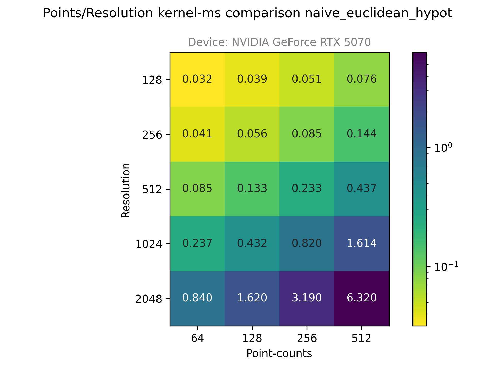 |
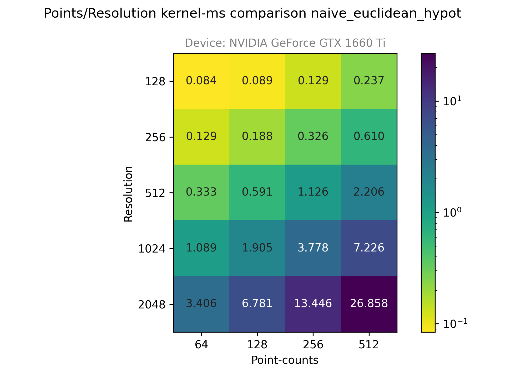 |
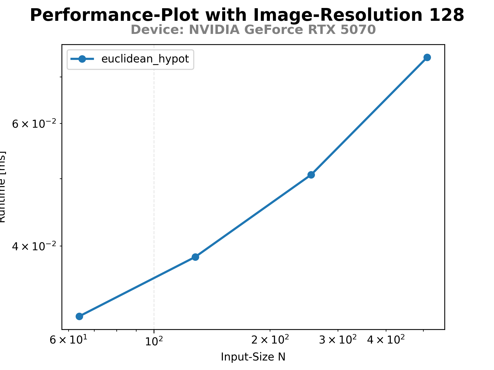 |
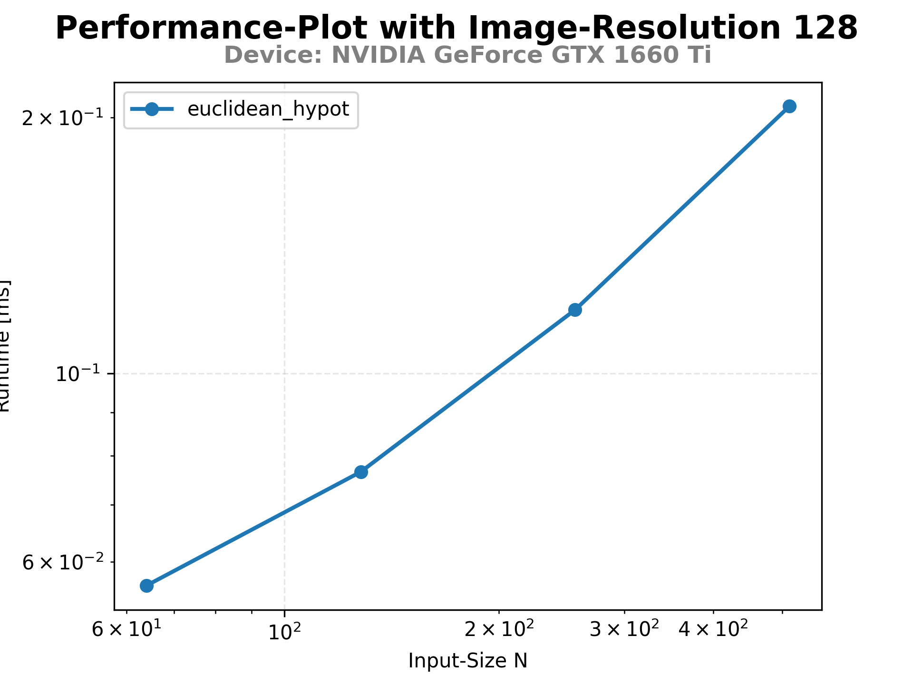 |
Es ist leicht zu erkennen, dass größenordnungsmäßig ein Verdoppeln der Anzahl an Punkten ein Verdoppeln der Laufzeit mit sich bringt. Ein Verdoppeln der Auflösung führt größenordnungsmäßig zu einem Vervierfachen der Laufzeit. Das liegt daran, dass ein Verdoppeln der Auflösung dazu führt, dass viermal so viele Pixel berechnet werden müssen.
Für den Fall resolution=2048 und points=512
wurde ncu (Nsight Compute)
für die RTX 5070 ausgeführt. Folgender Ausschnitt der
Ausgabe ist hierbei wichtig:
Section: GPU Speed Of Light Throughput
----------------------- ----------- -------------
Metric Name Metric Unit Metric Value
----------------------- ----------- -------------
DRAM Frequency Ghz 13,79
SM Frequency Ghz 2,54
Elapsed Cycles cycle 18.014.478
Memory Throughput % 31,15
DRAM Throughput % 0,35
Duration ms 7,09
L1/TEX Cache Throughput % 31,21
L2 Cache Throughput % 0,55
SM Active Cycles cycle 17.971.334,48
Compute (SM) Throughput % 87,20
----------------------- ----------- -------------
INF This workload is utilizing greater than 80.0% of the available compute or memory performance of this device.
To further improve performance, work will likely need to be shifted from the most utilized to another unit.
Start by analyzing workloads in the Compute Workload Analysis section.Laut ncu lastet der Algorithmus die GPU einigermaßen gut
aus. Dem Vorschlag von ncu, die
Compute Workload näher zu betrachten, wollen wir nachgehen.
Um eine nahe-liegende Optimierung zu motivieren, wird als Exkurs die
Manhattan-Distanz betrachtet.
Exkurs Manhattan-Distanz: Welchen Einfluss hat die Manhattan-Distanz als alternative Metrik, und wie verändert sich das visuelle Ergebnis?
Die Manhattan-Distanz ist eine alternative Distanz-Funktion zur Euklidischen Distanz-Funktion. Sie ist definiert als die Summe der absoluten Abstände für jede Dimension.
\sum_{i=0}^n \left|a_i - b_i\right|
Der zuvor beschriebene Algorithmus ist Distanz-Funktion agnostisch, weswegen nur eine kleine Änderung nötig ist, um das Voronoi-Diagram mit Manhattan-Distanz-Funktion zu berechnen.
Folgende Animation wurde für die Manhattan-Distanz erstellt.
| Voronoi | Distanzen |
|---|---|
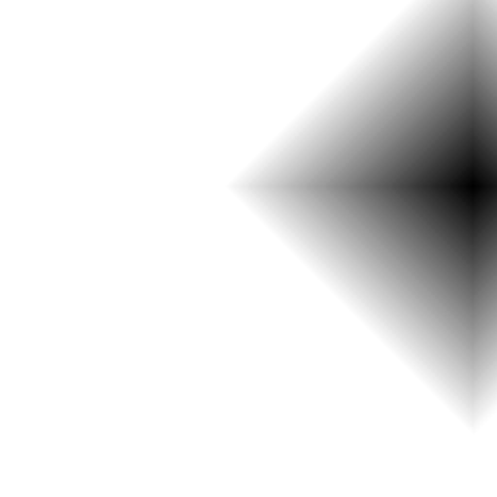 |
Der Algorithmus funktioniert auf die gleiche Weise, es gibt jedoch abgesehen von der Ausgabe einen deutlichen Unterschied in der Laufzeit. Der gleiche Algorithmus mit Manhattan-Distanz ist deutlich schneller, als mit Euklidischer-Distanz, wie folgendes Diagramm zeigt.
| RTX 5070 | GTX 1660 Ti |
|---|---|
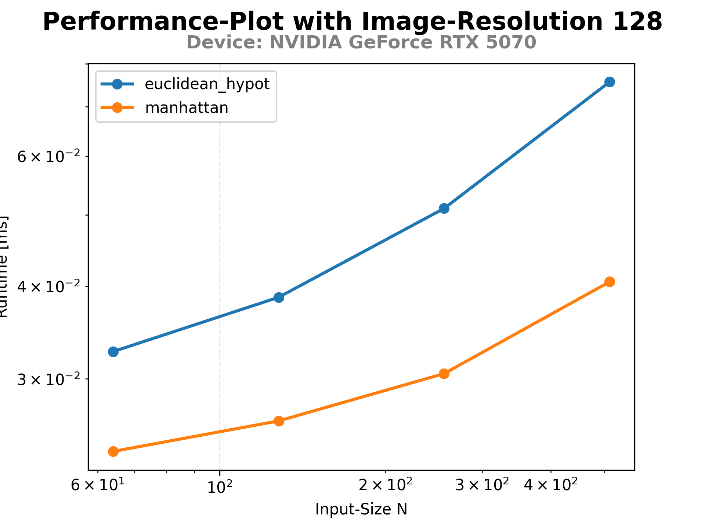 |
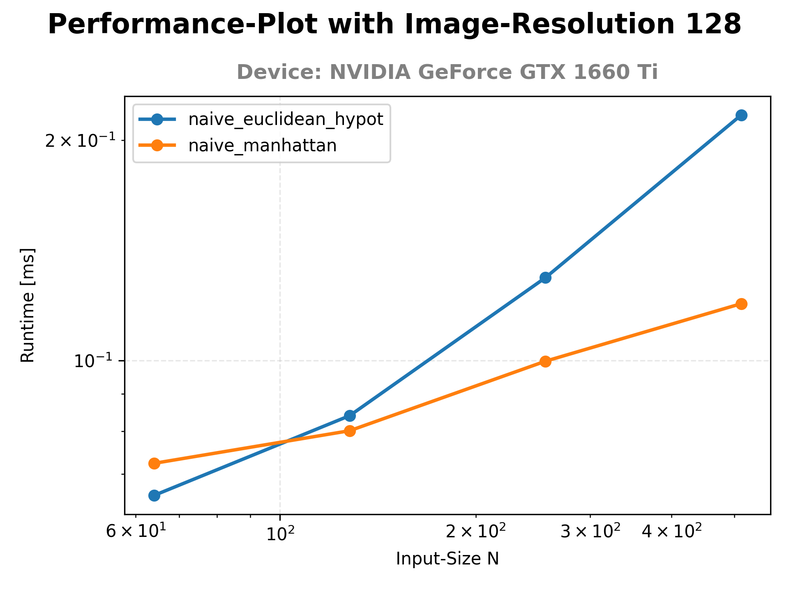 |
Dies ist natürlich nicht verwunderlich, da für die Berechnung der
Manhattan-Distanz nur Addition und die Absolut-Funktion nötig sind,
welche sehr leicht zu berechnen sind. Hingegen für die
Euklidische-Distanz wird die cuda.libdevice.hypotf Funktion
aufgerufen, welche schwerer beziehungsweise langsamer zu berechnen ist.
Es ist also ersichtlich, dass durch eine effizientere Distanz-Prüfung
eine schnellere Laufzeit möglich ist.
Das Ausführen von ncu für die Manhattan-Distanz hat
folgende Ausgabe geliefert:
Section: GPU Speed Of Light Throughput
----------------------- ----------- ------------
Metric Name Metric Unit Metric Value
----------------------- ----------- ------------
DRAM Frequency Ghz 13,79
SM Frequency Ghz 2,54
Elapsed Cycles cycle 8.809.962
Memory Throughput % 63,71
DRAM Throughput % 0,06
Duration ms 3,47
L1/TEX Cache Throughput % 63,83
L2 Cache Throughput % 1,10
SM Active Cycles cycle 8.787.657,25
Compute (SM) Throughput % 73,60
----------------------- ----------- ------------
INF Compute and Memory are well-balanced: To reduce runtime, both computation and memory traffic must be reduced.
Check both the Compute Workload Analysis and Memory Workload Analysis sections.In diesem Fall ist der Algorithmus laut ncu besser
ausgelastet. Es ist zu erkennen, dass die Anzahl an Rechenzyklen stark
gesunken ist und damit die Rechenzeit. Um den Algorithmus für die
Euklidische-Distanz zu optimieren, wäre es wünschenswert, wenn die
Anzahl an Rechenzyklen ebenfalls niedriger wäre. Diese Thematik wollen
wir im nächsten Abschnitt näher betrachten.
Welche Optimierungen können bei der Distanz-Prüfung problemlos gemacht werden und warum?
Der bisherige Algorithmus arbeitet jeden Punkt ab und berechnet den Abstand, um einen nächsten Nachbar zu bestimmen. Es gibt zwei Ansätze die an dieser Stelle untersucht werden könnten.
Es kann versucht werden das berechnen von Distanz-Funktionen zu
verbessern. Hierbei gibt es die Möglichkeit die sqrt
Funktion aufzurufen.
Ansonsten können mit der fastmath=True Annotation
schnellere Mathe-Operationen ermöglicht werden. Laut dem nvidia-numba-cuda-user-guide
werden einige Operationen wie sqrt durch schnellere
Approximationen ersetzt und Multiplikations- und Additions-Operationen
verschmolzen. Da unser Algorithmus nicht die exakten Distanzen benötigt,
sondern nur Distanzen vergleichen muss, ist dies ein klarer
Anwendungsfall.
Zuletzt kann darauf verzichtet werden die tatsächliche Euklidische Distanz zu berechnen. Da nur Distanzen verglichen werden, können wir auch die quadratische euklidische Distanz vergleichen. Auf den ersten Blick erscheint dies aufwendiger, jedoch kann auf diese Weise auf alle komplizierteren Mathe-Operationen verzichtet werden.
Es können schnelle Approximationen der Distanz-Funktion verwendet werden, um sich die exakte Berechnung einzusparen. Beispielsweise kann der Abstand, unter Berücksichtigung, nur einer Dimension bestimmt werden. Auf diese Weise können Punkte, die definitiv zu weit entfernt sind, übersprungen werden, indem eine Verzweigung eingesetzt wird.
Um den Rahmen dieses Projekt nicht zu sprengen, beschränken wir uns in diesem Projekt nur mit dem ersten Ansatz. Es sei hier jedoch am Rande erwähnt, dass Abzweigungen, wie sie im zweiten Ansatz beschrieben sind, vermutlich zu Warp-Divergence führen würden. Dadurch könnte ein solcher Ansatz die Performance potentiell verschlechtern.
Welchen Einfluss hat sqrt und wieso?
Für die bisherigen Berechnungen wurde die
cuda.libdevice.hypotf Funktion verwendet, da diese genau
die Euklidische-Distanz berechnet. Es ist auch möglich das Äquivalent
der cuda.libdevice.hypotf Funktion zu berechnen, indem der
Ausdruck \sqrt{(a_x - b_x)^2 + (a_y -
b_y)^2} mit Hilfe der Funktion cuda.libdevice.sqrtf
ausgeschrieben wird.
Die Annahme vorab ist, dass die beiden Funktionen die gleiche
Laufzeit haben. Es wäre auch denkbar, dass die
cuda.libdevice.hypotf Funktion bestimmte Optimierungen
ermöglicht, die bei der generischen Funktion
cuda.libdevice.sqrtf nicht möglich wären. Tatsächlich hat
sich in der Praxis das Gegenteil gezeigt, wie folgender Ausschnitt aus
dem Assembly zeigt.
$L__BB0_6:
mul.lo.s64 %rd66, %rd76, %rd8;
add.s64 %rd67, %rd1, %rd66;
add.s64 %rd68, %rd5, %rd66;
ld.global.b32 %r132, [%rd67];
add.s64 %rd69, %rd9, %rd68;
- ld.b32 %r133, [%rd69];
+ ld.b32 %r61, [%rd69];
- sub.f32 %r134, %r1, %r132;
- sub.f32 %r135, %r2, %r133;
+ sub.f32 %r62, %r1, %r60;
+ sub.f32 %r63, %r2, %r61;
- abs.f32 %r136, %r134;
- abs.f32 %r137, %r135;
- min.s32 %r138, %r137, %r136;
- max.s32 %r139, %r136, %r137;
- and.b32 %r140, %r139, -33554432;
- xor.b32 %r141, %r140, 2122317824;
- mul.f32 %r142, %r138, %r141;
- mul.f32 %r143, %r139, %r141;
- mul.f32 %r144, %r142, %r142;
- fma.rn.f32 %r145, %r143, %r143, %r144;
- sqrt.rn.f32 %r146, %r145;
+ mul.f32 %r64, %r63, %r63;
+ fma.rn.f32 %r65, %r62, %r62, %r64;
+ sqrt.rn.f32 %r66, %r65;
- or.b32 %r147, %r140, 8388608;
- mul.f32 %r148, %r146, %r147;
- setp.eq.f32 %p36, %r138, 0f00000000;
- selp.f32 %r149, %r139, %r148, %p36;
- setp.eq.f32 %p37, %r138, 0f7F800000;
- selp.f32 %r150, 0f7F800000, %r149, %p37;
- setp.lt.f32 %p38, %r150, %r151;
- selp.b64 %rd75, %rd76, %rd75, %p38;
+ setp.lt.f32 %p24, %r66, %r67;
+ selp.b64 %rd75, %rd76, %rd75, %p24;Es ist zu erkennen, dass die cuda.libdevice.hypotf zu
einem größeren Ausdruck übersetzt wird und innerhalb dieses Ausdrucks
die intrinsic Funktion sqrt.rn.f32 aufgerufen wird. Das
explizite Ausschreiben des Ausdrucks \sqrt{(a_x - b_x)^2 + (a_y - b_y)^2} führt
dazu, dass gewisse Anweisungen wegfallen.
Ein Abgleich mit der Dokumentation von CUDA für die hypotf
Funktion gibt einen Einblick weswegen diese Anweisungen existieren.
Die cuda.libdevice.hypotf Funktion muss garantieren,
dass:
Diese Bedingungen erfordern zusätzliche Anweisungen.
Für den Algorithmus sind die meisten dieser Bedingungen tatsächlich irrelevant. Das Verhalten des Algorithmus ändert sich nicht, wenn die Funktion \mathrm{NaN}, statt \infty oder andersherum zurückgibt, da nur Distanzen verglichen werden und der Algorithmus in beiden Fällen die gleiche Verzweigung wählt.
Durch die verringerte Anzahl an Anweisungen ist eine klare Verbesserung in der Laufzeit zu erkennen.
| RTX 5070 | GTX 1660 Ti |
|---|---|
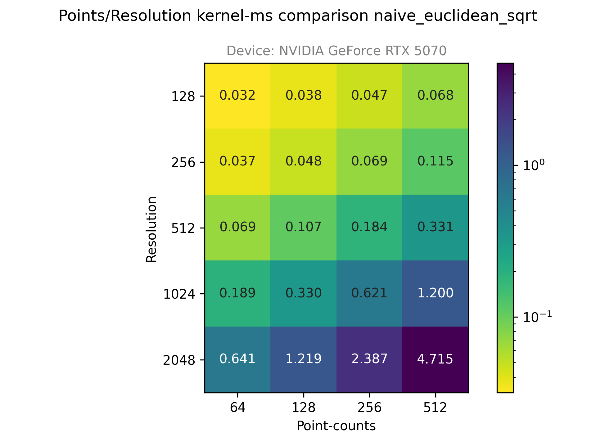 |
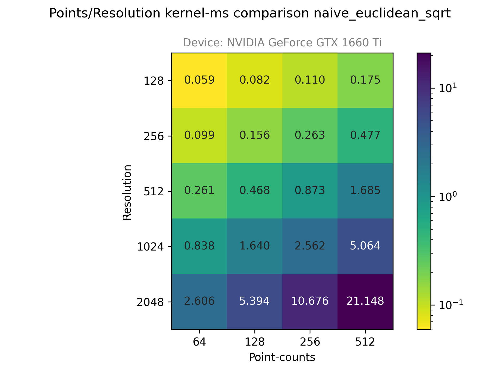 |
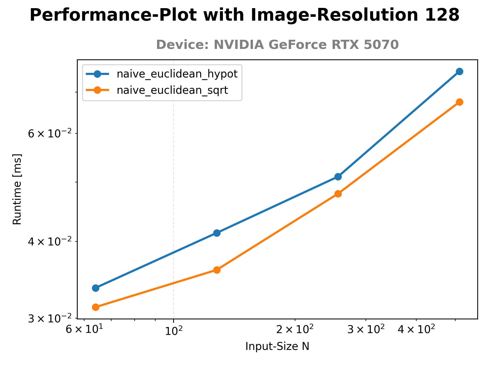 |
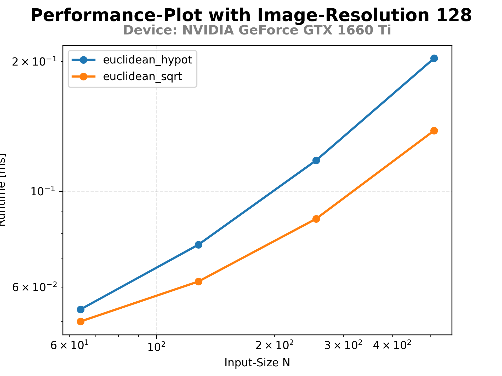 |
Die verringerte Anzahl an Anweisungen ist auch in der Ausgabe von
ncu zu sehen.
----------------------- ----------- -------------
Metric Name Metric Unit Metric Value
----------------------- ----------- -------------
DRAM Frequency Ghz 13,79
SM Frequency Ghz 2,54
Elapsed Cycles cycle 13.419.397
Memory Throughput % 41,82
DRAM Throughput % 0,12
Duration ms 5,28
L1/TEX Cache Throughput % 41,90
L2 Cache Throughput % 0,72
SM Active Cycles cycle 13.386.779,33
Compute (SM) Throughput % 83,84
----------------------- ----------- -------------
INF This workload is utilizing greater than 80.0% of the available compute or memory performance of this device.
To further improve performance, work will likely need to be shifted from the most utilized to another unit.
Start by analyzing workloads in the Compute Workload Analysis section.Im Vergleich zur initialen Implementation hat diese implementation
4.595.081 (~25.508 %) weniger Rechenzyklen.
Durch diese Einsparung ist der Algorithmus schneller geworden.
Es ist hierbei zu beachten, dass effektiv keine günstigere Distanz-Rechnung durchgeführt wurde, sondern es wurde auf gewisse Garantien bei der bisherigen Distanz-Berechnung verzichtet, da diese für den Algorithmus keinen Unterschied machen. Im Folgenden wird auf exakte Ergebnisse verzichtet, um den Algorithmus noch schneller zu machen.
Welchen Einfluss hat fastmath und wieso?
Wie bereits erwähnt ermöglicht die Annotation
fastmath=True auf Genauigkeit zu verzichten, im Austausch
für schnellere Laufzeiten. Als Beispiel ist folgender Ausschnitt aus dem
Assembly der regulären sqrtf-Variante und der
sqrtf-Variante mit fastmath=True gegeben.
$L__BB0_6:
mul.lo.s64 %rd66, %rd76, %rd8;
add.s64 %rd67, %rd1, %rd66;
add.s64 %rd68, %rd5, %rd66;
ld.global.b32 %r60, [%rd67];
add.s64 %rd69, %rd9, %rd68;
ld.b32 %r61, [%rd69];
sub.f32 %r62, %r1, %r60;
sub.f32 %r63, %r2, %r61;
mul.f32 %r64, %r63, %r63;
fma.rn.f32 %r65, %r62, %r62, %r64;
- sqrt.rn.f32 %r66, %r65;
+ sqrt.approx.ftz.f32 %r66, %r65;
setp.lt.f32 %p24, %r66, %r67;
selp.b64 %rd75, %rd76, %rd75, %p24;In diesem Fall hat der Compiler wegen fastmath=True die
intrinsic Funktion sqrt.approx.ftz.f32 statt
sqrt.rn.f32 ausgewählt. Gleichermaßen wurden Divisionen
div.rn.f32 durch div.approx.ftz.f32 ersetzt.
Abgesehen von diesen beiden Operationen bleibt das Assembly größtenteils
gleich.
Für die Laufzeit ergeben sich folgende Unterschiede.
| RTX 5070 | GTX 1660 Ti |
|---|---|
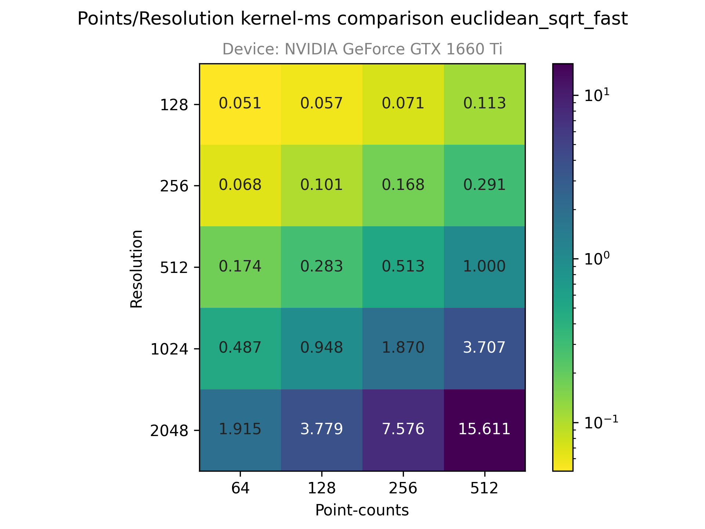 |
|
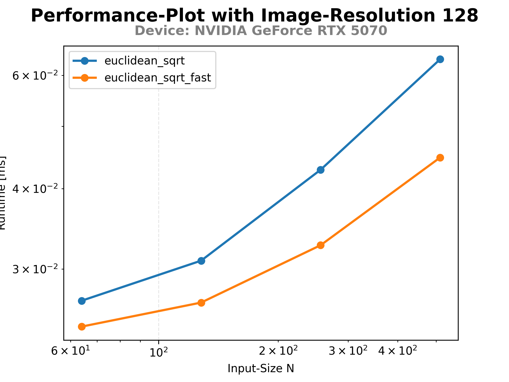 |
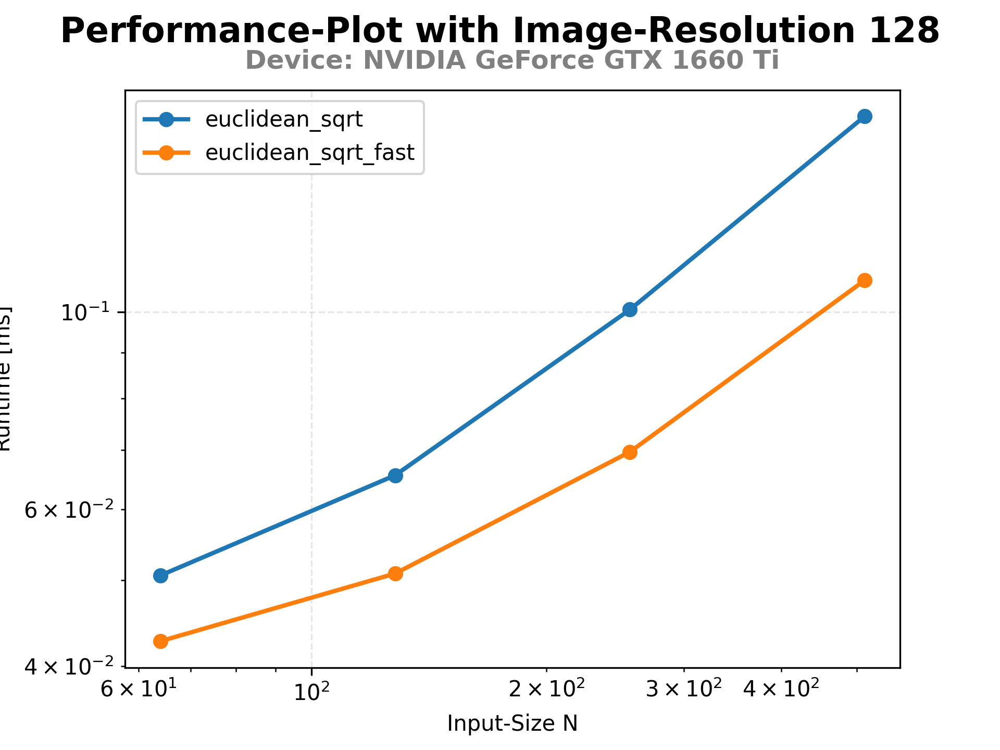 |
Die Laufzeit hat sich durch den Einsatz der
fastmath=True Annotation deutlich verbessert. Für den Fall
Resolution=2048 und Point-count=512 hat sich
die Laufzeit, im Vergleich zur initialen Implementation aus Aufgabe
3, ungefähr halbiert.
Welchen Einfluss hat schlicht a^2 + b^2 und wieso?
Es gibt nun noch eine weitere wichtige Optimierung bei der Berechnung
der Distanz-Funktion, nämlich das Verzichten auf die sqrt
Operation. Im Algorithmus werden Distanzen nur verglichen und nicht
anderweitig verwendet. Aus diesem Grund können wir folgende Folgerung
ausnutzen: \sqrt{a} \leq \sqrt{b} \implies a
\leq b, wenn a \geq 0 und b \geq 0. Da im Algorithmus die Eingaben für
sqrt immer Quadrate (^2) sind, sind die
Eingaben immer 0 oder positiv.
Im Assembly ist die Änderung wie zu erwarten (An dieser Stelle wurden Register-Namen geändert, um die Übersichtlichkeit zu verbessern):
$L__BB0_6:
mul.lo.s64 %rd66, %rd76, %rd8;
add.s64 %rd67, %rd1, %rd66;
add.s64 %rd68, %rd5, %rd66;
ld.global.b32 %r60, [%rd67];
add.s64 %rd69, %rd9, %rd68;
ld.b32 %r61, [%rd69];
sub.f32 %r62, %r1, %r60;
sub.f32 %r63, %r2, %r61;
mul.f32 %r64, %r63, %r63;
fma.rn.f32 %r65, %r62, %r62, %r64;
- sqrt.rn.f32 %r66, %r65;
- setp.lt.f32 %p24, %r66, %r67;
+ setp.lt.f32 %p24, %r65, %r67;
selp.b64 %rd75, %rd76, %rd75, %p24;Diese Änderung erscheint auf den ersten Blick ernüchternd, jedoch ist
die sqrt.rn.f32 eine aufwendige Operation und diese
Operation einzusparen, macht einen großen Unterschied.
In dem bisherigen Assembly hat der Compiler Loop-Unrolling
durchgeführt mit bis zu vier Iterationen der Schleife. Durch das
verzichten auf sqrt.rn.f32 scheint der Compiler bis zu acht
Iterationen der Schleife aufzurollen.
Folgende Diagramme zeigen die Laufzeit des Algorithmus mit der neuen Distanz-Funktion.
| RTX 5070 | GTX 1660 Ti |
|---|---|
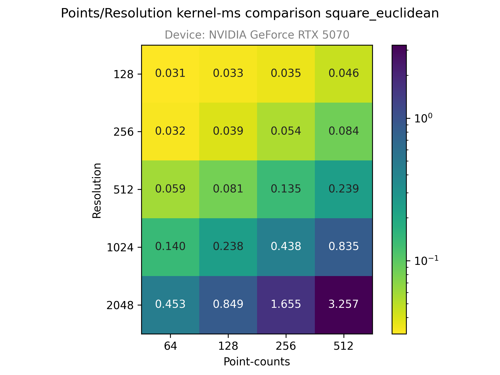 |
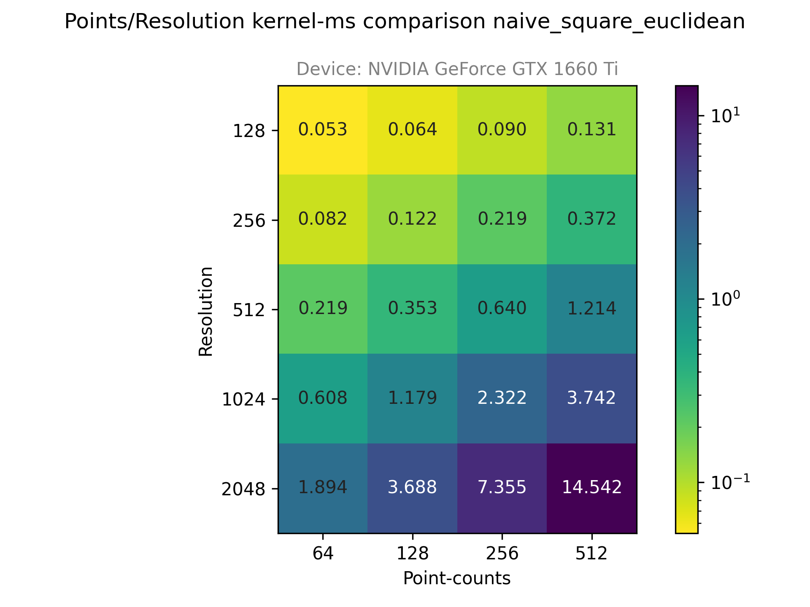 |
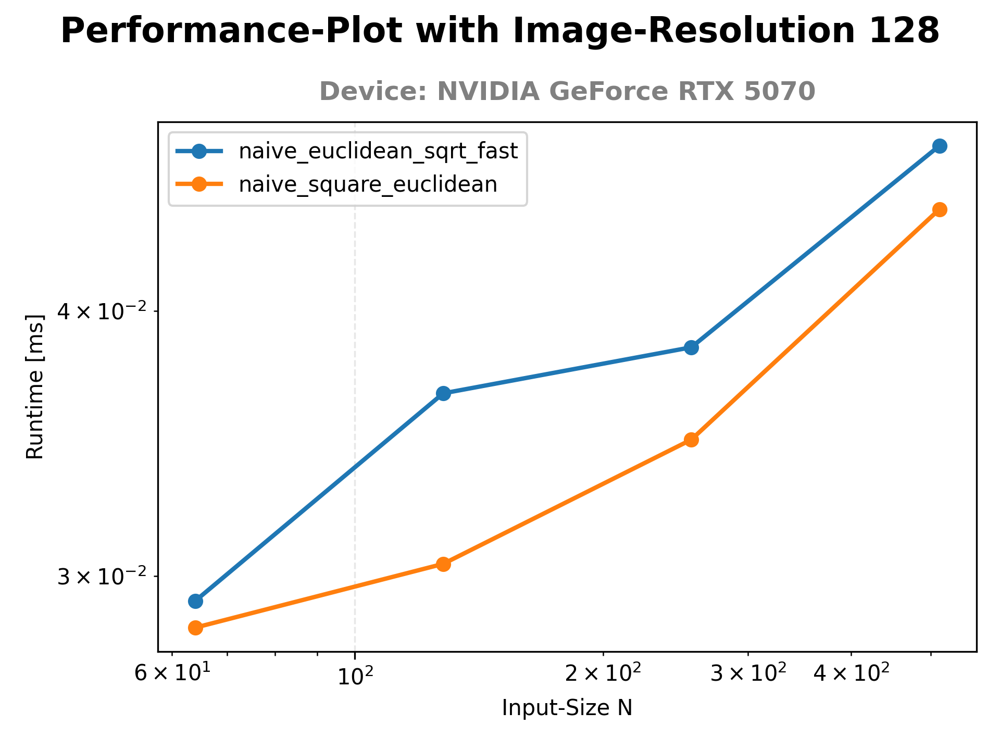 |
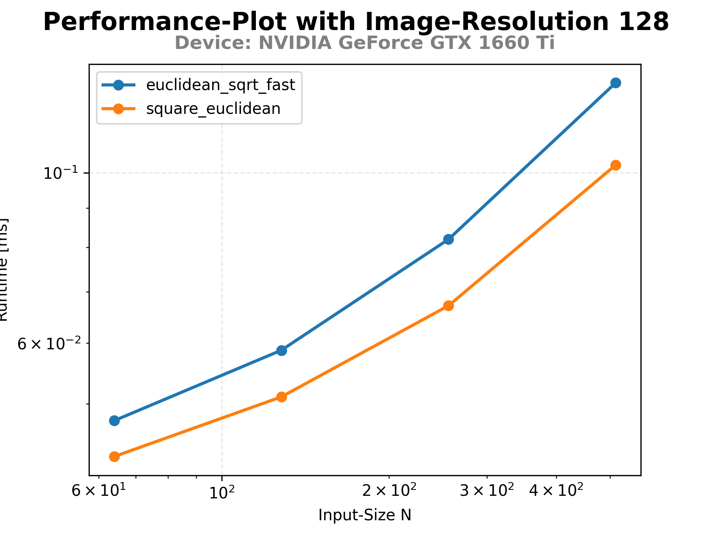 |
Es ist zu sehen, dass ein verzichten auf die sqrt
Funktion die Performance steigert. Jedoch ist auch zu erkennen, dass die
Laufzeit zwischen der sqrt Funktion mit
fastmath=True und keiner sqrt Funktion relativ
nahe beieinander liegen.
An dieser Stelle ist es erneut interessant die Ausgabe von
ncu zu betrachten:
Section: GPU Speed Of Light Throughput
----------------------- ----------- ------------
Metric Name Metric Unit Metric Value
----------------------- ----------- ------------
DRAM Frequency Ghz 13,79
SM Frequency Ghz 2,54
Elapsed Cycles cycle 9.264.207
Memory Throughput % 60,58
DRAM Throughput % 0,12
Duration ms 3,65
L1/TEX Cache Throughput % 60,70
L2 Cache Throughput % 1,03
SM Active Cycles cycle 9.240.057,88
Compute (SM) Throughput % 73,55
----------------------- ----------- ------------
OPT Compute is more heavily utilized than Memory: Look at the Compute Workload Analysis section to see what the
compute pipelines are spending their time doing. Also, consider whether any computation is redundant and
could be reduced or moved to look-up tables.Hierbei weist ncu darauf hin, dass der Algorithmus viele
Berechnungen durchführt und vergleichsweise wenig Speicherauslastung
hat. Den Vorschlag die Anzahl an Berechnungen zu verringern oder
Ergebnisse zwischenzuspeichern funktioniert für diesen Algorithmus
jedoch leider nicht. Die Ausgabe von ncu wollen wir an
dieser Stelle nicht ignorieren, jedoch wird erst im nächsten Abschnitt
die Speicherauslastung optimiert. Vorab betrachten wir noch die
Kombination aus Quadratischer-Euklidischer-Distanz und
fastmath=True.
Das Verwenden von fastmath=True für die neue
Distanz-Funktion hat nur minimale Auswirkungen, da im Algorithmus nur
noch Divisionen, die nur selten durchgeführt werden, beschleunigt
werden, wie folgende Diagramme zeigen.
| RTX 5070 | GTX 1660 Ti |
|---|---|
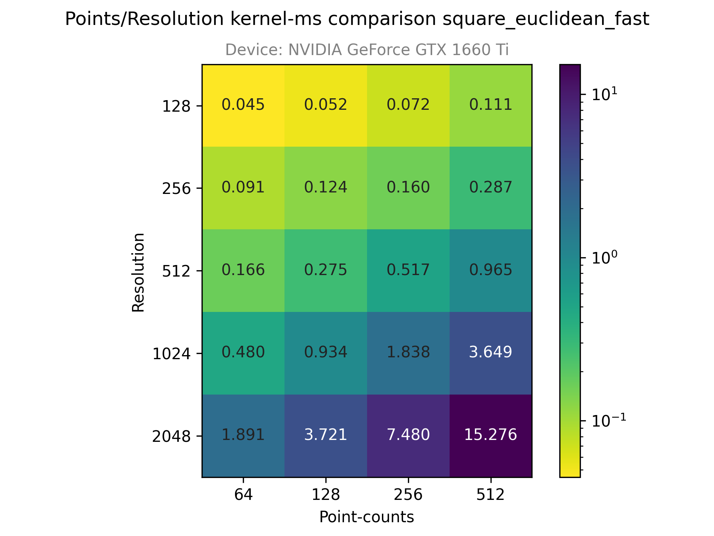 |
|
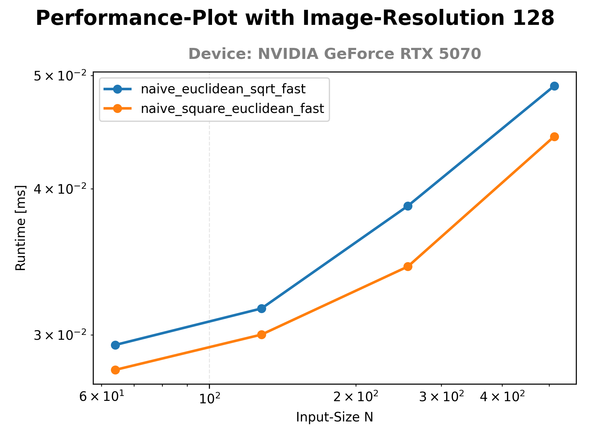 |
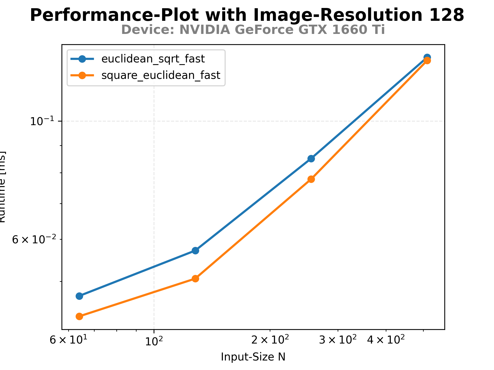 |
Wie wurden Daten in der Naiven Implementation geladen?
Die Naive Implementation iteriert in jedem Thread mit einer Schleife über die Punkte. Das bedeutet jeder Thread greift in den globalen Speicher für jeden einzelnen Punkt.
Was kann beim Laden der Daten verbessert werden?
Da in der Naiven Implementation zu jedem Zeitpunkt bekannt ist, welcher Punkt als nächstes benötigt wird, wäre es möglich die Daten in mehreren Bündeln (Batch-Processing) zu verarbeiten. Das bedeutet, dass ein Teil der Daten gleichzeitig geladen und danach gleichzeitig verarbeitet wird.
Wie können die Daten ins Shared Memory geladen und mit einem Grid-Stride-Loop verarbeitet werden?
Der gewählte Ansatz besteht darin eine feste Konstante
GRID_STRIDE_SIZE zu definieren. Auf diese Weise kann ein
cuda.shared.array definiert und im Kernel zugegriffen
werden. Dieses Array hat, wie die Punkte Eingabe, ebenfalls zwei
Dimensionen. Nämlich GRID_STRIDE_SIZE und 2.
Nun werden die ersten GRID_STRIDE_SIZE Punkte in das Shared
Memory geschrieben. Hierbei werden 2 * GRID_STRIDE_SIZE
Threads benötigt, da für jeden Punkt ein x und ein
y geladen werden muss. Je zwei aufeinander folgende Threads
laden also die Daten für einen Punkt. Threads, welche keinen Punkt
berechnen sollen, warten. Falls keine weiteren Punkte vorhanden sind,
wird np.inf ins Shared Memory geschrieben, um Fehler bei
Rechnungen zu vermeiden. Bevor lesend auf das Shared Memory zugegriffen
werden kann, muss cuda.syncthreads() aufgerufen werden, um
Race-Conditions zu vermeiden. Nun können alle Threads aus dem Block
durch das Array iterieren und Distanzen berechnen. Falls ein neuer
nächster Nachbar entdeckt wurde, muss der korrekte Index des Punktes
berechnet werden (Der Index in das Shared Memory Array wäre nicht
korrekt). Zuletzt muss erneut cuda.syncthreads() aufgerufen
werden, bevor die Schleife sich wiederholt, erneut um Race-Conditions zu
vermeiden.
Ein weiteres Detail ist, dass ein early-exit nicht mehr möglich ist für Threads, die Pixel außerhalb des Diagramms berechnen. Das liegt daran, dass Threads neben dem Pixel-Berechnen auch Punkte laden müssen. Es kann also sein, dass ein Thread zwar außerhalb des Diagramms liegt, aber trotzdem Punkte für andere Threads laden muss. Erst nachdem keine Punkte mehr geladen werden müssen, ist ein exit für diese Threads möglich beziehungsweise nötig.
Welchen Einfluss hat das Laden der Daten ins Shared Memory und Verarbeiten mit einem Grid-Stride-Loop und wieso?
Um den Einfluss der Shared Memory Verarbeitung mit Grid-Stride-Loop
besser darzustellen, wird im Folgenden mit der naiven Implementation aus
Aufgabe 3 verglichen. Die Distanz-Berechnung wird für beide
Varianten mit cuda.libdevice.hypotf durchgeführt, um
vergleichbare Resultate zu erhalten.
Die Größe GRID_STRIDE_SIZE ist natürlich maßgeblich für
die Laufzeit, beispielsweise führt ein GRID_STRIDE_SIZE=128
zu schlechterer performance. Mit GRID_STRIDE_SIZE=8 haben
wir die besten Ergebnisse erzielt. In den folgenden Analysen gilt
deswegen stets GRID_STRIDE_SIZE=8.
Ein Blick auf das Assembly zeigt, dass der Compiler wegen der
Konstante GRID_STRIDE_SIZE=8 ein Loop-Unrolling der inneren
Schleife, welche Distanz-Berechnungen übernimmt, durchgeführt hat. Im
Vergleich zur Naiven Variante konnte der Compiler darauf verzichten
mehrere Loop-Unrolling Schritte für verschiedene Längen durchzuführen,
da bereits beim Kompilieren des Programms die Anzahl an Iterationen
feststeht.
| RTX 5070 | GTX 1660 Ti |
|---|---|
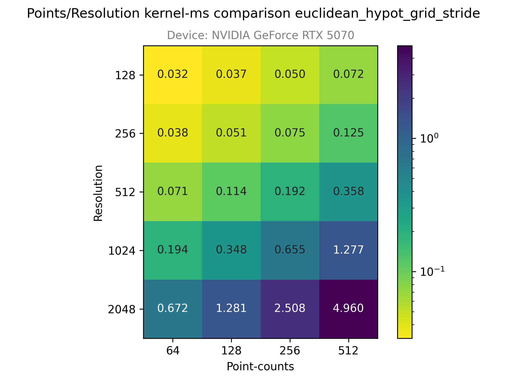 |
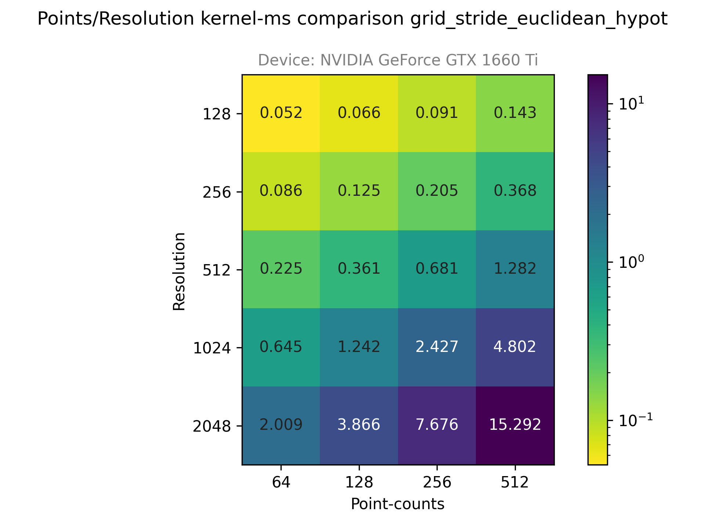 |
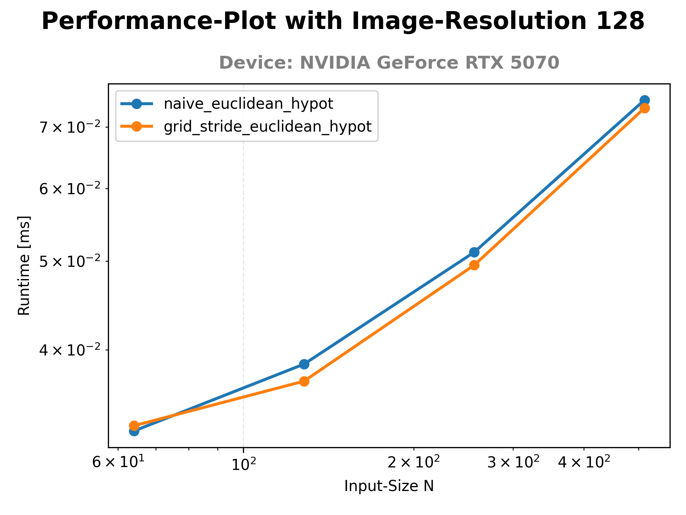 |
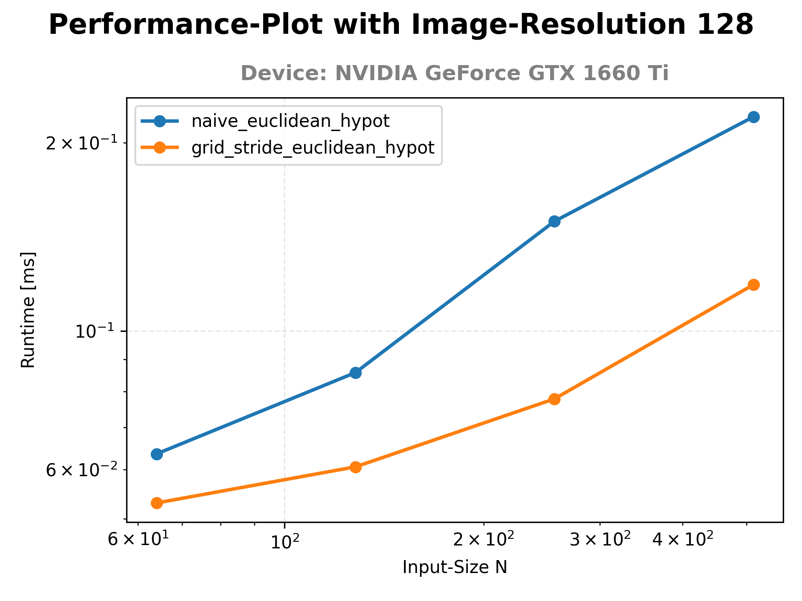 |
Es ist zu sehen, dass im Vergleich zur Naiven Variante, bei höherer Auflösung und Punkt-Anzahl deutlich Laufzeit eingespart wurde. Interessanterweise ist zu sehen, dass der Algorithmus für kleine Eingaben langsamer geworden ist. Der Grund hierfür ist vermutlich darauf zurückzuführen, dass mehr Overhead durch das Shared-Memory, beziehungsweise das Loop-Unrolling entstanden ist. Erst bei größeren Eingaben fällt dieser Overhead weg.
Ein Blick auf die ncu Ausgabe zeigt, dass trotz der
langsameren Distanz-Berechnung die Compute (SM) Throughput
so hoch, wie noch bei keiner anderen Implementation liegt.
Section: GPU Speed Of Light Throughput
----------------------- ----------- -------------
Metric Name Metric Unit Metric Value
----------------------- ----------- -------------
DRAM Frequency Ghz 13,79
SM Frequency Ghz 2,54
Elapsed Cycles cycle 14.116.124
Memory Throughput % 40,37
DRAM Throughput % 0,11
Duration ms 5,56
L1/TEX Cache Throughput % 40,45
L2 Cache Throughput % 0,20
SM Active Cycles cycle 14.081.178,23
Compute (SM) Throughput % 92,81
----------------------- ----------- -------------
INF This workload is utilizing greater than 80.0% of the available compute or memory performance of this device.
To further improve performance, work will likely need to be shifted from the most utilized to another unit.
Start by analyzing workloads in the Compute Workload Analysis section.Es ist zu beachten das wie bei den anderen ncu Ausgaben
stets der Fall resolution=2048 und points=512
betrachtet wird. Die Laufzeit hat sich deutlich verringert, obwohl die
Anzahl an Rechenzyklen nur leicht gesunken ist. Der Grund hierfür ist
der größere Durchsatz.
Wie können die Daten innerhalb eines Warp geladen und mit
shfl_sync verarbeitet werden werden?
Das folgende Verfahren hat starke Ähnlichkeit mit dem vorherigen
Ansatz. In diesem Fall werden Daten nicht mehr auf Block-Ebene, sondern
auf Warp-Ebene geladen. Da Threads in einem Warp synchron ablaufen, ist
kein Aufruf von cuda.syncthreads() mehr nötig. Ein Nachteil
hierbei ist, dass nun jeder Warp die Daten laden muss. Da nun kein
cuda.shared.array vorhanden ist, muss eine lokale Variable
definiert werden, welches auf ähnliche Weise verwendet wird. Die
Variable wurde point_component_warp_value benannt und wird
für jeden zweiten Thread eines Warp die x-Komponente und
für jeden anderen Thread des Warp die y-Komponente laden.
Falls ein Punkt nicht vorhanden ist, werden die Komponenten jeweils auf
np.inf gesetzt um Fehler bei Rechnungen zu vermeiden. Wenn
die Variable point_component_warp_value für jeden Thread
eines Warp gesetzt wurde, wurden 16 x- und 16
y-Komponenten geladen, da es insgesamt 32 Threads pro Warp
sind. Nun kann mit cuda.shfl_sync auf einen beliebigen Wert
eines anderen Thread des gleichen Warp zugegriffen werden. Mit
cuda.shfl_sync(0xFFFFFFFF, point_component_warp_value, index)
und
cuda.shfl_sync(0xFFFFFFFF, point_component_warp_value, index + 1)
werden die Komponenten eines Punkt geladen und es kann die
Distanz-Rechnung durchgeführt werden. Die beiden
cuda.shfl_sync Aufrufe werden 16-mal wiederholt, bis alle
die vom Warp geladenen Punkte verarbeitet sind. Danach können die
nächsten Punkte geladen werden, erneut ohne ein Aufruf von
cuda.syncthreads(), da die Threads eines Warp synchron
ablaufen.
Wie auch beim vorherigen Ansatz ist ein early-exit nicht möglich aus den gleichen Gründen.
Welchen Einfluss hat das Laden der Daten in einen Warp und das
Verarbeiten mit shfl_sync und wieso?
Diese Variante benötigt kein Ausprobieren von verschiedenen
GRID_STRIDE_SIZE, da hierbei die Konstante
WARP_SIZE=32 verwendet wird.
Wie zu erwarten ist im Assembly die intrisic Operation
shfl.sync.idx zu sehen. Der Compiler hat in diesem Fall
wegen der Konstante WARP_SIZE=32 erneut ein Loop-Unrolling
durchgefürt. Erneut konnte der Compiler darauf verzichten mehrere
Loop-Unrolling für verschiedenen Längen zu erzeugen, da die Anzahl an
Iterationen der inneren Schleife eindeutig ist. Der Compiler hat jedoch
nicht 16 sondern nur vier Iterationen aufgerollt.
| RTX 5070 | GTX 1660 Ti |
|---|---|
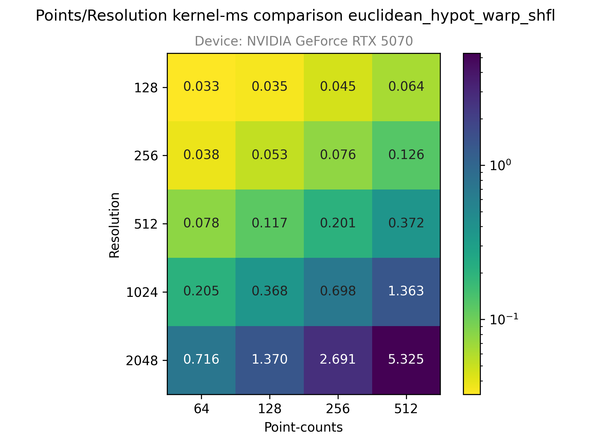 |
|
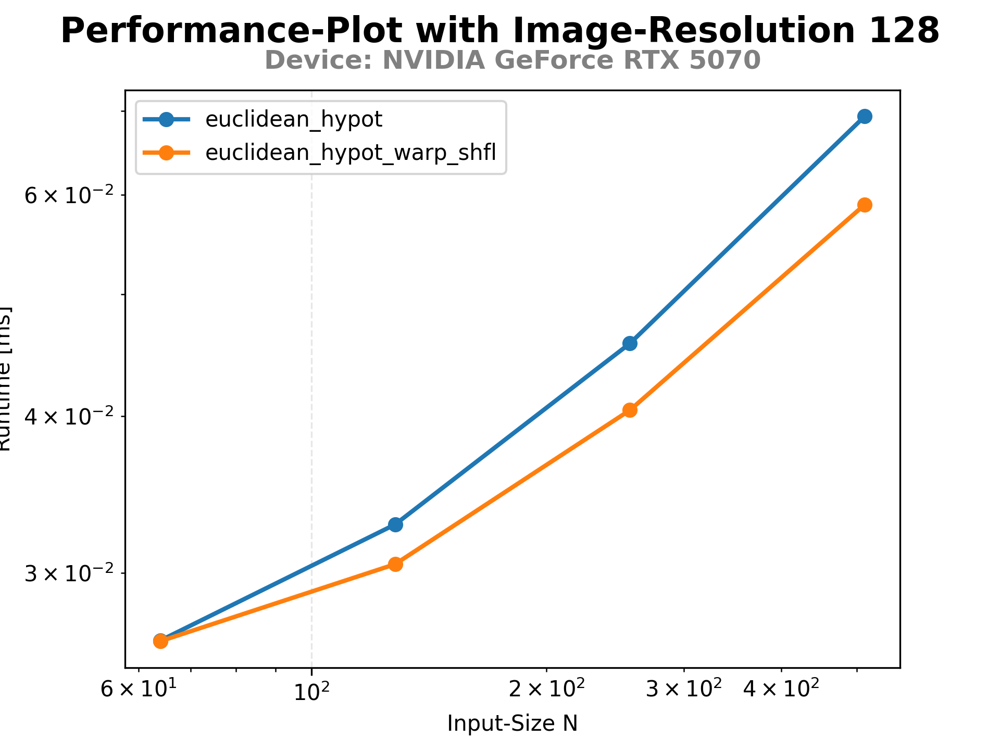 |
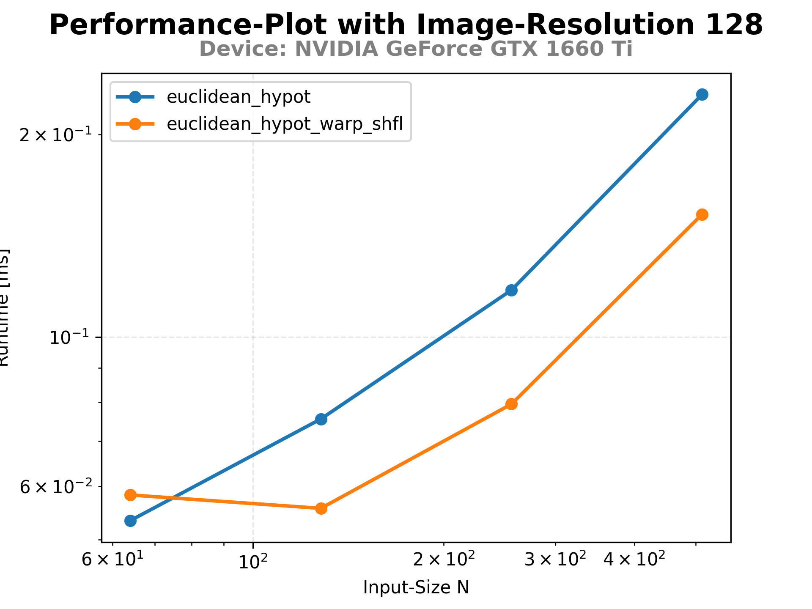 |
Es ist zu sehen, dass diese Variante ebenfalls schneller arbeitet,
als die initiale Variante. Interessanterweise ist nun kein Unterschied
bei kleinen Eingaben zu sehen, der Grund ist an dieser Stelle leider
nicht ganz eindeutig, aber es könnte daran liegen, dass kein
cuda.syncthreads nötig ist. Für größere Eingaben erscheint
der Grid-Stride-Loop mit Shared-Memory effektiver.
Wie verhalten sich die Kernel durch den Einsatz von schnelleren Distanz-Berechnungen und effizienterem Laden von Daten?
Wir haben nun die Berechnungen (Compute) und die Speicherzugriffe
(Memory) separat voneinander optimiert. Nun möchten wir die beiden
Optimierungen zusammenführen. Von der Distanz-Berechnung wählen wir die
Square-Euclidean Variante mit fastmath=True und kombinieren
diese mit je der Grid-Stride-Loop mit Shared-Memory als auch Warp mit
shfl_sync. Der Grund hierfür ist, dass bei den
Speicher-Optimierungen keine Methode eindeutig schneller als eine andere
war.
Folgende Diagramme geben die Laufzeiten wieder.
| RTX 5070 | GTX 1660 Ti |
|---|---|
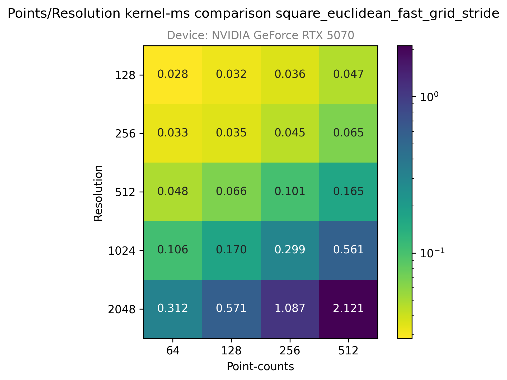 |
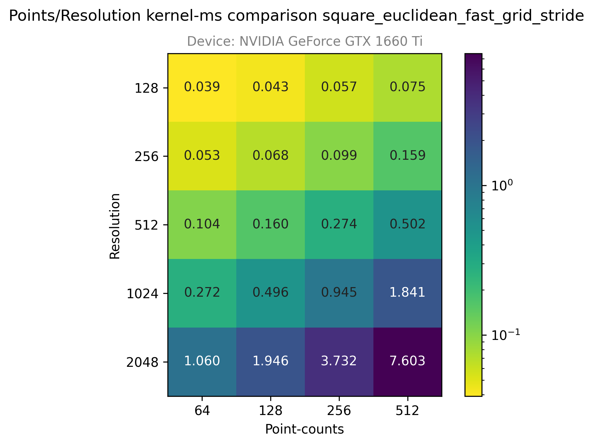 |
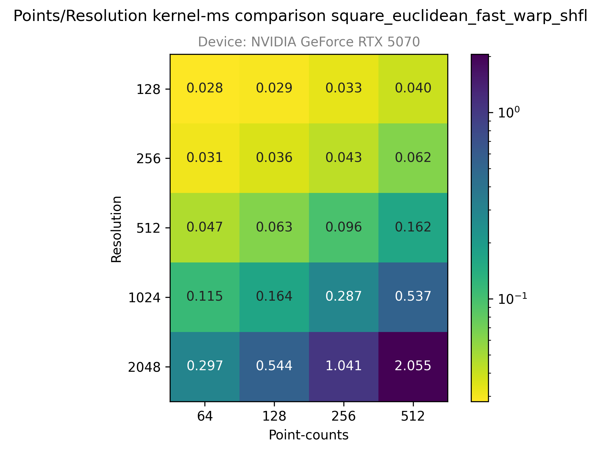 |
Es hat sich ergeben, dass die Warp mit shfl_sync
Variante für jede Eingabe eine bessere Laufzeit aufweist.
Interessanterweise hat sich in der ncu Ausgabe ebenfalls
eine deutliche Verbesserung für die Warp mit shfl_sync
Variante gezeigt.
Section: GPU Speed Of Light Throughput
----------------------- ----------- ------------
Metric Name Metric Unit Metric Value
----------------------- ----------- ------------
DRAM Frequency Ghz 13,79
SM Frequency Ghz 2,54
Elapsed Cycles cycle 5.815.751
Memory Throughput % 99,51
DRAM Throughput % 0,91
Duration ms 2,29
L1/TEX Cache Throughput % 99,74
L2 Cache Throughput % 1,66
SM Active Cycles cycle 5.798.622,54
Compute (SM) Throughput % 99,51
----------------------- ----------- ------------
INF This workload is utilizing greater than 80.0% of the available compute or memory performance of this device.
To further improve performance, work will likely need to be shifted from the most utilized to another unit.
Start by analyzing workloads in the Compute Workload Analysis section.Die Compute (SM) Throughput beziehungsweise
Memory Throughput Metrik liegt nun fast beim Maximum und
ist erneut so hoch wie bei keiner der bisherigen Analysen. Ebenso ist
die Anzahl an Rechenzyklen so niedrig wie bei keiner der anderen
Implementationen.
Dieser Algorithmus ist nun möglichst effizient implementiert. Im folgenden wollen wir betrachten, ob durch einen alternativen Algorithmus beziehungsweise Ansatz eine weitere Verbesserung der Laufzeit möglich ist.
[!NOTE]
- Für die Diastanzberechnung wird im Folgenden die quadrierte euklidische Distanz beziehungsweise im Exkurs die Manhattan-Distanz verwendet.
- Der in den vorherigen Aufgaben verwendete Algorithmus wird im Folgenden teilweise referenziert und verwendet. Dabei wird er als “Pixel-Algorithmus” bezeichnet.
Der Jump Flooding Algorithmus (JFA) wurde im Jahr 2006 von Guodong Rong und Tiow-Seng Tan auf der Computergrafik-Konferenz ACM Symposium on Interactive 3D Graphics and Games (I3D) in Redwood City vorgestellt (vgl. Jump Flooding in GPU). Die Autoren konzipierten den Algorithmus gezielt für die parallele Architektur von GPUs, um geometrische Probleme wie die Berechnung von Voronoi-Diagrammen oder Distanzfeldern zu lösen.
Wie funktioniert der Algorithmus?
Für den Algorithmus wird ein quadratisches Grid der Größe N \times N definiert. Bevor der Algorithmus
startet, wird das leere Grid initialisiert, indem die zuvor zufällig
generierten Punkt-Koordinaten gesetzt werden: Jeder Punkt (auch
seed genannt) weiß zu Beginn, zu welchem Pixel er gehört.
Alle anderen Pixel werden mit einem undefinierten
Startzustand initialisiert. Das bedeutet, ein normaler Pixel weiß
anfangs nicht, zu welchem Punkt er am nächsten liegt.
Der Jump Flooding Algorithmus wird nun in mehreren Schritten iterativ ausgeführt. Die erste Schrittweite beträgt k = \frac{N}{2}, wobei N die Auflösung des Grids ist. Für jede Schrittweite k prüft jeder Pixel im Grid seine 8 Nachbarpixel (Norden, Nordost, Osten, Südost, Süden, Südwest, Westen, Nordwest), die genau k Pixel entfernt sind. Dabei wird überprüft, ob diese Nachbarn bereits gültige Punkt-Koordinaten besitzen (also nicht mehr das Uninitialized-Flag haben):
Nach jeder Iteration wird die Schrittweite k halbiert (k = \frac{k}{2}), bis der Wert 1 erreicht und berechnet wurde.
Aufgrund dieser fortlaufenden Halbierung ist es zwingend erforderlich, dass das Grid eine Auflösung mit einer Zweierpotenz (2^m) besitzt. Für rechteckige Grids müsste man das schrittweise Halbieren der Schrittweite entlang der längeren Kante durchführen.
Wie wird der JFA implementiert?
In dieser ersten naiven Implementation wird das Grid
als 3D-Array der Form shape=(resolution, resolution, 2) vom
Typ int32 definiert. Dieses Layout wird auch als Array
of Structures (AoS) bezeichnet, weil es für jeden Pixel die X- und
Y-Koordinate des nächstgelegenen Punktes speichert (vgl.
generate_AoS_grid_jfa()). Für den undefinierten
Startzustand der Pixel, die kein Punkt sind, wird der Wert
-1 verwendet. Dieser signalisiert, dass der Pixel noch
keine Punkt-Koordinaten kennt.
Eine Besonderheit liegt in der Steuerung auf der Host-Seite: Das Voronoi-Diagramm wird hier iterativ in einer Schleife nach dem eben beschriebenen Verfahren bestimmt. Die Kernel-Implementierung auf der GPU beinhaltet also keine vollständige Berechnung des gesamten Diagramms, sondern führt nur einen einzelnen Pass (einen Iterationsschritt) aus. Der Kernel nimmt folgende Parameter entgegen:
grid_in)grid_out)step_size)size)Die Verwendung von zwei getrennten Grids ist notwendig, da das Eingabe-Grid während des Schrittes gelesen wird, um das Ausgabe-Grid parallel zu aktualisieren. Auf der Host-Seite wird der Kernel in einer Schleife so oft aufgerufen, bis die Schrittweite den Wert 1 abgearbeitet hat. Nach jedem Kernel-Aufruf werden das Eingabe- und Ausgabe-Grid getauscht (Swapping), sodass ein Ping-Pong-artiges Konstrukt entsteht.
Bei der Verwendung eines gemeinsamen Grids kann es zu Race Conditions kommen: Ein Thread liest dann möglicherweise den von einem anderen Thread neu geschriebenen Wert anstelle des ursprünglichen Werts vor diesem Pass. Da die X- und Y-Koordinate eines Punktes als zwei separate Schreiboperationen erfolgen, könnte ein Thread die X-Koordinate eines Punktes mit der noch nicht aktualisierten Y-Koordinate eines anderen Punktes kombinieren, wodurch ein Punkt entsteht, der in der Form gar nicht existiert.
Um am Ende aus dem 3D-Array (das die Punkt-Koordinaten als X/Y-Tupel speichert) ein finales 2D-Array mit eindeutigen UIDs der Punkte zu erzeugen, wird für jeden Pixel der berechnete X-Wert mit dem Wert Y \cdot \mathrm{resolution} addiert:
\text{UID} = X + (Y \cdot \text{resolution})
Dadurch entstehen eindeutige IDs für identische Punkt-Koordinaten.
Die folgenden Visualisierungen zeigen den Zustand des Diagramms nach jedem Schritt k (Auflösung: 2048 \times 2048, Punkte: 256):
uv run .\src\task6a.py jfa-euclidean-visualization
uv run .\src\task6a.py jfa-manhattan-visualizationJFA - square euclidean distance |
JFA - manhattan distance |
|---|---|
|
|
Sowohl bei der quadratischen euklidischen Distanz als auch bei der Manhattan-Distanz ist gut zu erkennen, wie das zu Beginn leere, schwarze Bild mit jedem Schritt “voller” wird. Das typische “Flooding-Verhalten” (Fluten) des Algorithmus wird hierbei in jeder Iteration sichtbar.
Wo liegen die Unterschiede zum Ansatz der vorherigen Implementierung?
Ursprünglich wurde zur Initialisierung der kürzesten Distanz wie beim
Pixel-Algorithmus Folgendes verwendet:
best_dist = np.float32(np.inf). Ein
.inspect_types()-Aufruf nach dem Kernel-Lauf zeigt jedoch,
dass trotz des expliziten float32-Casts eine
float64-Variable initialisiert wird.
Da in dieser Aufgabe die Distanzberechnung auf die quadrierte
euklidische Distanz (beziehungsweise im Exkurs auf die
Manhattan-Distanz) festgelegt ist und der Kernel auf diskreten
Ganzzahl-Koordinaten operiert, ist ein Ausweichen auf Fließkommazahlen
mathematisch nicht notwendig: Das Ergebnis einer Summe von Quadraten
ganzer Zahlen ist stets wieder eine Ganzzahl. Deshalb wird die kürzeste
Distanz (best_dist) mit dem maximalen
int32-Wert initialisiert. Folgender Code zeigt die
minimalen und maximalen Werte für den NumPy-Datentyp
int32:
info = np.iinfo(np.int32)
print("Minimum:", info.min) # -2147483647
print("Maximum:", info.max) # 2147483647Bei der Festlegung auf int32 muss sichergestellt sein,
dass die quadrierte euklidische Distanz das Limit von 2147483647 nicht überschreitet:
\mathrm{dist} = \Delta x^2 + \Delta y^2
Geht man von einem quadratischen Bild der Seitenlänge N \times N aus, tritt die maximale Distanz im Worst Case zwischen den diagonal gegenüberliegenden Bildeckpunkten auf. Daraus folgt für die maximale quadrierte Distanz:
\mathrm{dist}_{\max} = N^2 + N^2 = 2N^2
Um einen Überlauf zu verhindern, muss gelten:
2N^2 \le 2147483647
N^2 \le 1073741823,5
N \le \sqrt{1073741823,5} = 32768
Demnach würde diese Obergrenze bei Bildgrößen ab 32768 \times 32768 Pixeln überschritten werden, was für die meisten Auflösungen allerdings ausreichend sein sollte. Da beim JFA zudem nie zwei diagonal gegenüberliegende Bildeckpunkte verwendet werden - aufgrund der höchsten Schritte von \frac{N}{2} zu Beginn - ist die tatsächliche maximale Grenze für den JFA nochmal höher.
Gibt es Warp-Divergenz?
Ja, in dieser Implementierung gibt es Warp-Divergenz: Die Threads
innerhalb eines Warps können sich in unterschiedliche Ausführungspfade
aufteilen. Der Grund liegt darin, dass jeder Thread genau einen Pixel
bearbeitet und die dabei geprüften Bedingungen datenabhängig sind -
insbesondere, ob ein Pixel oder dessen Nachbar bereits eine gültige
Punkt-Koordinate kennt (!= -1) oder noch den initialen
Default-Wert (-1) trägt.
Diese Divergenz lässt sich aufgrund der JFA-Charakteristik nur schwer
vermeiden: Zu Beginn (großer step_size) kennen viele Pixel
noch keinen Punkt, wodurch die -1-Prüfungen und
Distanzvergleiche stark zwischen den Threads eines Warps variieren
können. Mit kleiner werdender Schrittweite besitzen zunehmend mehr Pixel
bereits einen gültigen Punkt, sodass sich die Pfade der Threads
innerhalb eines Warps angleichen können und die Divergenz tendenziell
abnimmt.
Gibt es Qualitätsunterschiede (Pixelfehler) im Diagramm?
In der Literatur wird der JFA als Approximations-Algorithmus
bezeichnet. Das bedeutet, dass der Algorithmus mathematisch nicht immer
ein zu 100% korrektes Ergebnis liefert. Auch im originalen
Paper von Guodong Rong und Tiow-Seng Tan wird dieses Thema explizit
behandelt (vgl. 5. Errors in
Jump Flooding). Die Autoren zeigen dort aber auch auf, dass die
Fehlerrate in der Praxis minimal ist.
Experimente in der Studie zeigen, dass diese Fehler hauptsächlich entlang der Grenzen von Voronoi-Regionen auftreten. Genauer gesagt: Bei Voronoi-Zellen, die entlang der Gittergrenze liegen, können sich fehlerhafte Gitterpunkte um die Voronoi-Kanten herum ansammeln. Bei den übrigen Voronoi-Zellen sind fast alle fehlerhaften Gitterpunkte überwiegend Voronoi-Eckpunkte oder gruppieren sich um diese herum.
Als Ursache für diese Fehler wird der Informationstransport des JFA über abnehmende Schrittweiten genannt. Ein Pixel im Gitter speichert zu jedem Zeitpunkt immer nur eine Information zu einem ihm nächstgelegenen Punkt. Wenn nun in einer Iteration mehrere Punktkoordinaten verglichen werden, speichert das Pixel am Ende nur die aktuell lokal optimalste Koordinate. Andere Koordinaten, die für umliegende Pixel relevant sein könnten, breiten sich über dieses Pixel nicht weiter aus. Man spricht dabei von einem getöteten Punkt (killed seed). Für die weiteren Iterationsschritte fehlen nachfolgenden Pixeln im Gitter genau diese verloren gegangenen Informationen, um ihren mathematisch tatsächlich nächstgelegenen Punkt zu finden. Dies resultiert letztlich in einer fehlerhaften Zuordnung der Punktkoordinaten.
Zur Verbesserung der Ergebnisse schlägt die Studie mehrere Varianten
vor, um diese Fehler gezielt an den Voronoi-Eckpunkten und entlang der
Kanten zu eliminieren - darunter JFA+1 und
JFA+2. Dabei wird zunächst der Standard-JFA durchgeführt.
Am Ende werden jedoch zusätzliche Durchläufe mit einer Schrittweite von
1 (für JFA+1) beziehungsweise
2 und anschließend 1 (für
JFA+2) angehängt. Diese lokalen Suchen erlauben es den
betroffenen Pixeln, korrekte Daten aus ihrer unmittelbaren Nachbarschaft
zu übernehmen, selbst wenn der primäre Ausbreitungspfad zuvor blockiert
wurde.
Um diesem Aspekt im Projekt nachzugehen, wurde der naive JFA-Ansatz
mit der quadrierten euklidischen Distanz
(_jfa_pass_square_euclidean_kernel) mit der
Referenzimplementierung aus der vorherigen Aufgabe
(_voroni_square_euclidean_kernel) verglichen. Der
pixelbasierte Algorithmus dient dabei als exakte
100%-Referenz. Der Vergleich wurde mit einer Auflösung von
2048 \times 2048
Pixeln und 512 Punkten durchgeführt.
Die folgenden Error Maps visualisieren die Abweichungen der verschiedenen JFA-Varianten, wobei identische Zuordnungen schwarz und fehlerhafte Pixel rot dargestellt werden:
uv run .\src\task6a.py jfa-accuracyStandard JFA |
JFA+1 |
JFA+2 |
|---|---|---|
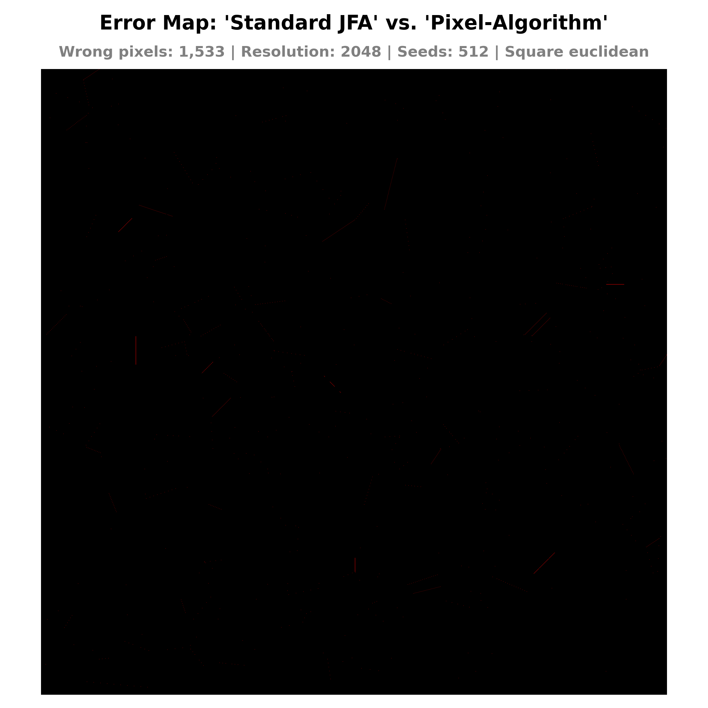 |
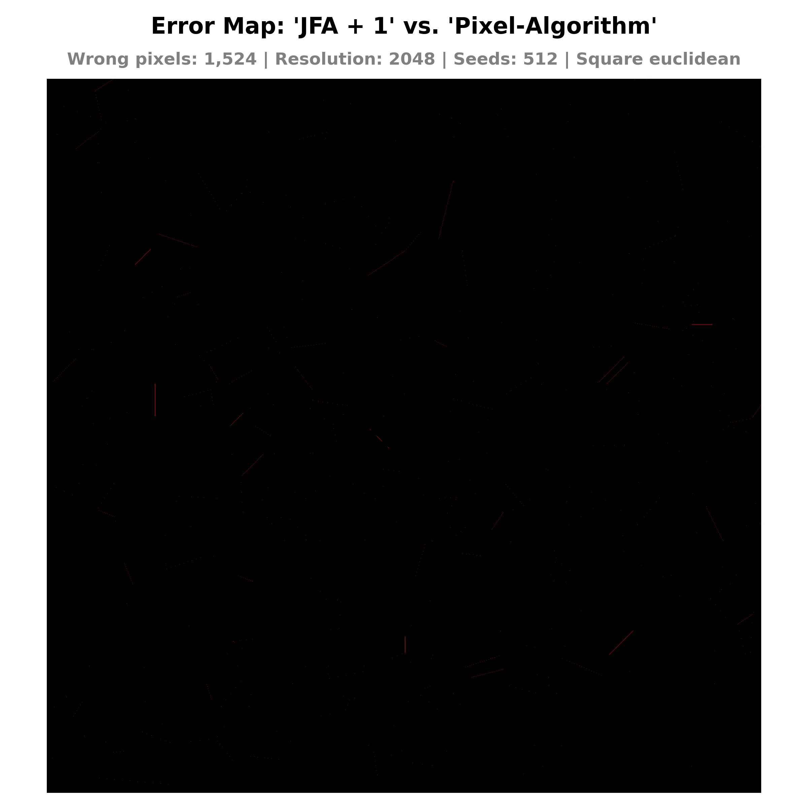 |
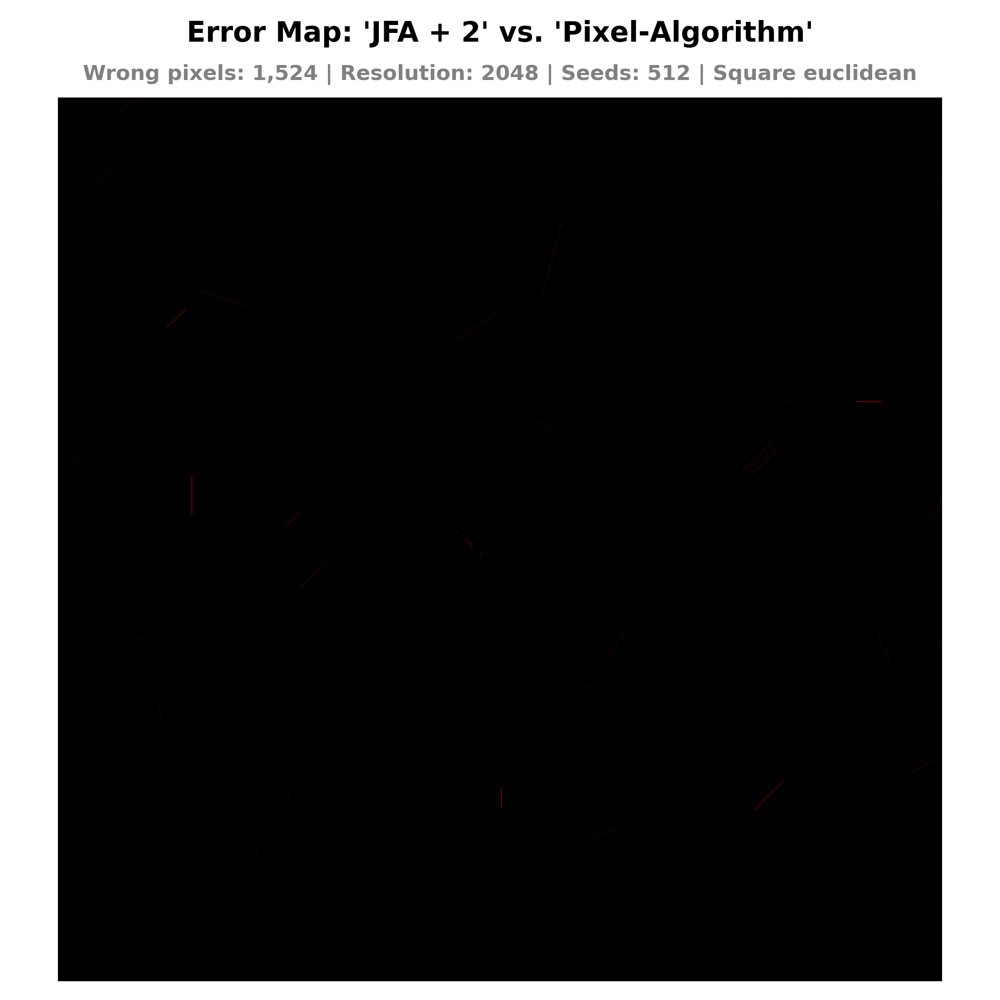 |
Die Auswertung der Genauigkeiten lieferte folgende Ergebnisse:
Standard JFA: 99.9635%
JFA + 1: 99.9637%
JFA + 2: 99.9637%Es ist zu erkennen, dass bereits beim Standard-JFA ohne zusätzliche
Durchläufe der Anteil fehlerhafter Pixel im Vergleich zur
Gesamtpixelanzahl deutlich unter 1 % liegt. Mit den zusätzlichen
Durchläufen von JFA+1 und JFA+2 lassen sich im
Experiment zwar messbare Verbesserungen der Genauigkeit erzielen, diese
fallen bei der gewählten Konstellation jedoch nicht mehr allzu
signifikant aus, da die Basisgenauigkeit bereits recht hoch ist.
Was muss bei der Performancemessung beachtet werden?
In Aufgabe 2 wurde das Konzept für die Performanceanalyse vorgestellt. Für den JFA ergeben sich hierbei besondere Herausforderungen. Neben der unterschiedlichen Kernel-Signatur ist vor allem die Hostseitige Steuerung ein wesentlicher Unterschied: Während beim Pixel-Algorithmus ein einzelner Kernel-Aufruf das Voronoi-Diagramm vollständig berechnet, benötigt der Standard-JFA mehrere sequenzielle Kernel-Aufrufe. Das beeinflusst, wie die tatsächliche Kernel-Laufzeit korrekt gemessen werden kann.
Zwischen jedem Kernel-Aufruf müssen Ein- und Ausgabe-Grid getauscht (Ping-Pong-Swap) und die Schrittweite halbiert werden. Diese Operationen werden vom Python-Interpreter ausgeführt. Die dabei entstehenden Zeiten sollen bei der Laufzeitmessung möglichst nicht erfasst werden.
Da in Aufgabe 2 entschieden wurde, CUDA-Events für die
Laufzeitmessung zu verwenden, scheidet time.perf_counter()
aus. Für CUDA-Events stehen zwei Varianten zur Auswahl:
Variante 1: Events pro Iteration mit Synchronisierung:
total_ms: float = 0.0
while k >= 1:
kernel_start.record()
kernel[blocks_per_grid, threads_per_block](grid_in, grid_out, k, resolution)
kernel_end.record()
cuda.synchronize()
total_ms += kernel_start.elapsed_time(kernel_end)
grid_in, grid_out = grid_out, grid_in
k //= 2Hier wird jeder Kernel-Aufruf einzeln geklammert und seine Laufzeit
zur Gesamtzeit addiert. Dies entspricht dem Vorgehen beim
Pixel-Algorithmus. Der Vorteil ist, dass ausschließlich reine
Kernel-Ausführungszeiten summiert werden. Der entscheidende Nachteil ist
jedoch, dass cuda.synchronize() innerhalb der
Schleife die CPU nach jedem Kernel-Aufruf blockiert, bis die GPU fertig
ist. Dadurch wird die GPU serialisiert: Sie kann erst dann den
nächsten Kernel empfangen, wenn die CPU nach der Synchronisierung wieder
die Kontrolle übernommen hat.
Variante 2: Events um die gesamte Ping-Pong-Schleife:
kernel_start.record()
while k >= 1:
kernel[blocks_per_grid, threads_per_block](grid_in, grid_out, k, resolution)
grid_in, grid_out = grid_out, grid_in
k //= 2
kernel_end.record()
cuda.synchronize()
total_ms = kernel_start.elapsed_time(kernel_end)Das Start-Event wird einmalig vor der Schleife, das End-Event
einmalig danach in den GPU-Stream eingetragen. Laut Numba-Dokumentation
gilt ein Event als eingetreten, sobald alle Aufgaben, die zum Zeitpunkt
des Aufrufs von .record() in der Warteschlange des Streams
standen, abgeschlossen sind. Da Kernel-Aufrufe in Numba standardmäßig
asynchron sind und in den Default-Stream eingereiht werden, sieht die
GPU den Stream als geordnete Sequenz:
[start_event => kernel_1 => kernel_2 => ... => kernel_N => end_event]Der Python-Code (Swap, Halbierung von k) läuft
ausschließlich auf der CPU und erscheint nicht in der
GPU-Timeline. elapsed_time misst daher reine GPU-Zeit
zwischen den beiden Markern.
Für die Messungen in Aufgabe 2 wurde Variante 2 gewählt.
Was liefert die Performance-Analyse?
Die folgenden Diagramme zeigen die gemessenen Kernellaufzeiten für die quadratische euklidische Distanz:
uv run .\src\task7.py jfa_square_euclidean| RTX 5070 | GTX 1660 Ti |
|---|---|
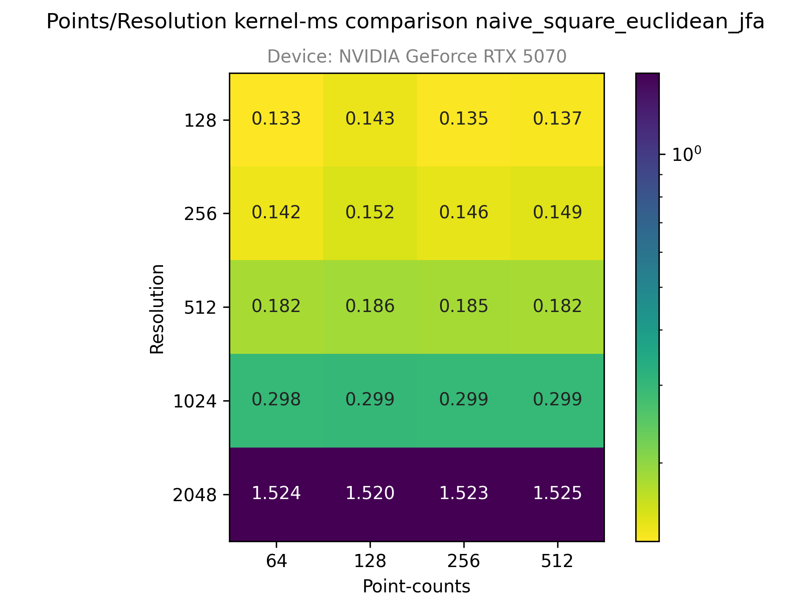 |
|
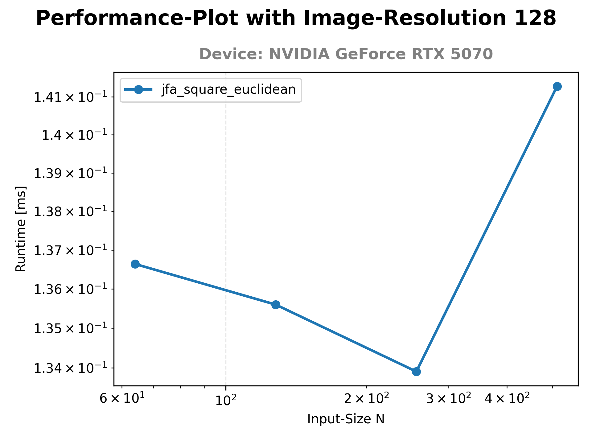 |
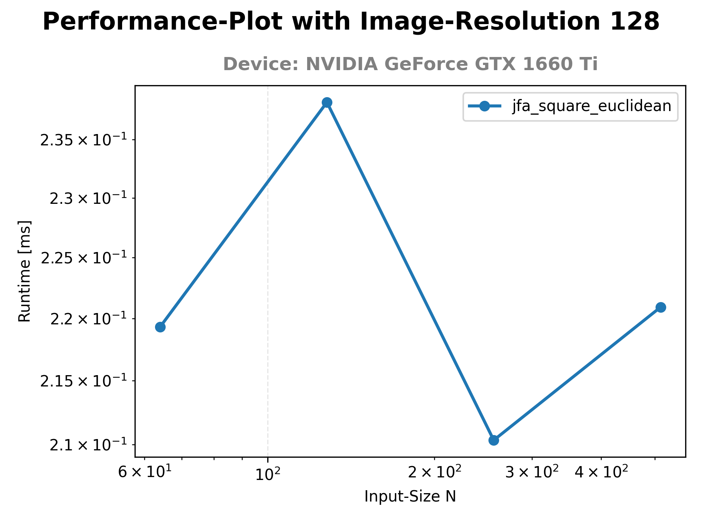 |
Aus den Messungen geht hervor, dass die Kernellaufzeit primär von der Bildauflösung abhängt und unabhängig von der Anzahl der gesetzten Punkte ist. In den Heatmaps ist visuell deutlich zu erkennen, dass der Farbverlauf innerhalb einer Zeile (also bei konstanter Bildauflösung) gleich bleibt und die Laufzeit erst beim Wechsel in die nächste Zeile (steigende Bildauflösung) zunimmt.
Dieses Verhalten spiegelt die Charakteristik des JFA wider: Da der Algorithmus in jedem Schritt das gesamte Gitter parallel durchläuft und die Anzahl der Gesamtschritte durch die Auflösung vorgegeben ist, bleibt der Rechenaufwand pro Pixel konstant - unabhängig davon, wie viele Punkte die Voronoi-Regionen erzeugen. Pro Iterationsschritt besitzt der JFA eine Komplexität von O(1), da ein Thread pro Pixel immer die gleiche Arbeit macht. Bezogen auf die Gesamtgrafik ergibt sich durch die Halbierung der Schrittweite eine logarithmische Laufzeitabhängigkeit von der Auflösung N:
O(\log_2(N))
Auch in den unteren Linien-Diagrammen (Performance-Plots bei einer festen Auflösung von 128 \times 128) wird dieses Verhalten bei genauerer Betrachtung deutlich. Obwohl die Kurve auf den ersten Blick stark schwankt, zeigt ein Blick auf die Zahlen der Y-Achse, dass sich die Werte in einem kleinen Wertebereich bewegen. Die visuellen Schwankungen resultieren aus der automatischen Skalierung des Diagramms, welches auf die Kurve “herangezoomt” hat. In absoluten Zahlen ausgedrückt sind diese Schwankungen vernachlässigbar und bestätigen die Unabhängigkeit von der Punkteanzahl.
Die folgenden Diagramme zeigen die gemessenen Kernellaufzeiten für die Manhattan-Distanz:
uv run .\src\task7.py jfa_manhattan
uv run .\src\task7.py compare-jfa_square_euclidean-jfa_manhattan| RTX 5070 | GTX 1660 Ti |
|---|---|
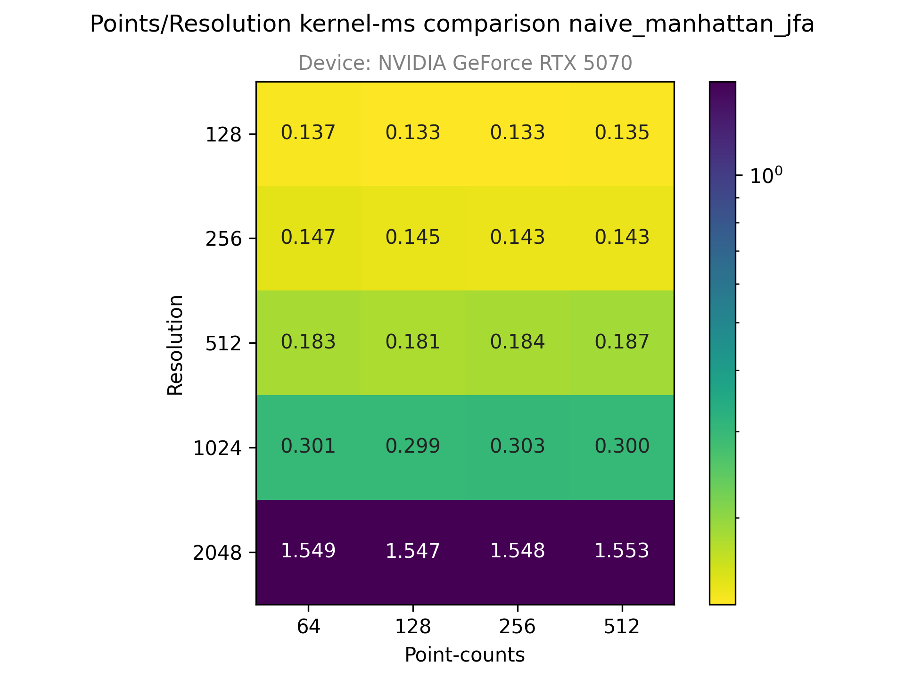 |
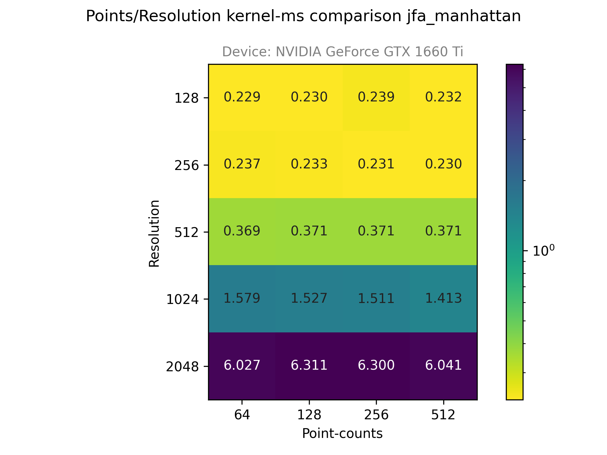 |
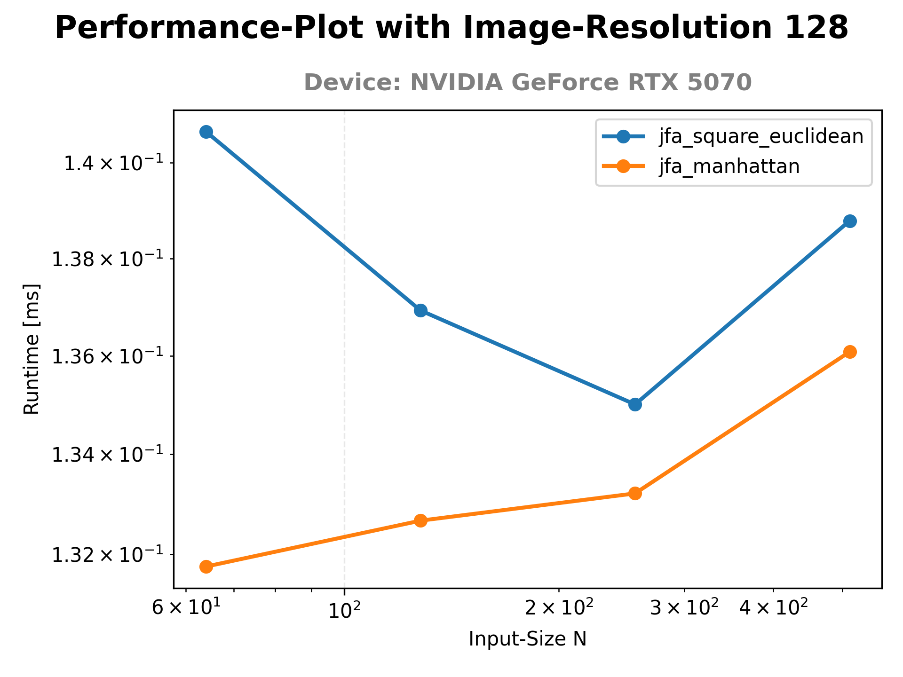 |
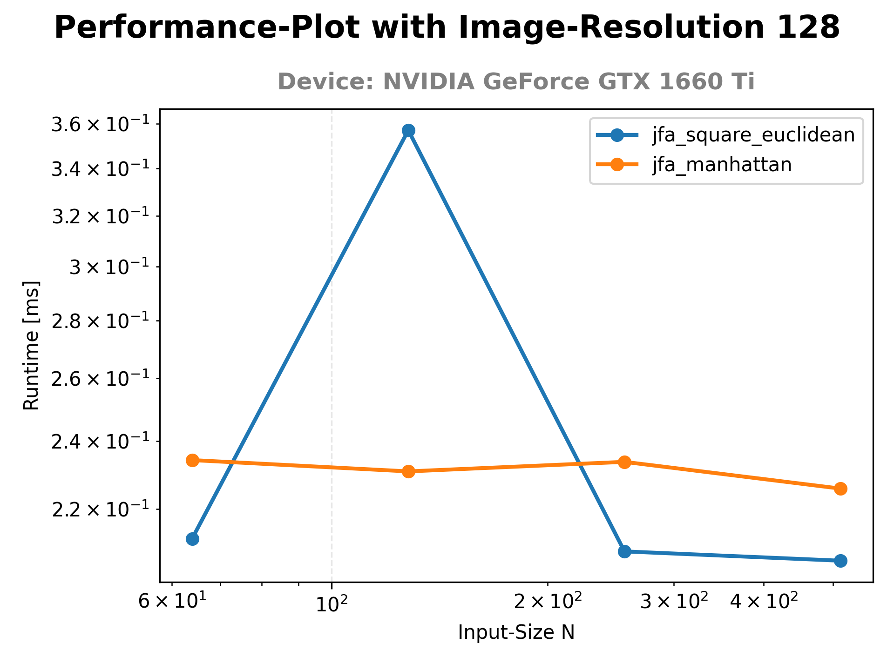 |
Die Diagramme der Manhattan-Distanz zeigen vergleichbare Laufzeiten und Verhaltensmuster wie die der quadratischen euklidischen Distanz. Die Wahl der Metrik zur Distanzberechnung hat folglich keinen spürbaren Einfluss auf die Gesamtperformance des Kernels. Daraus lässt sich schließen, dass der JFA-Kernel primär memory-bound (speicherbandbreitenbegrenzt) und nicht compute-bound (rechenleistungsbegrenzt) ist. In jeder Iteration müssen die Threads auf die Informationen der 8 benachbarten Pixel zugreifen. Der Aufwand für das Laden dieser Daten aus dem globalen VRAM dominiert die Laufzeit. Ob im Rechenwerk anschließend eine Multiplikation mehr durchgeführt wird (wie bei der euklidischen Distanz: dx \cdot dx + dy \cdot dy) oder eine Betragsfunktion (Manhattan: \left|dx\right| + \left|dy\right|), fällt leistungstechnisch nicht ins Gewicht.
Was liefert die ncu-Analyse?
Schaut man sich die ncu-erzeugten Logdateien square
euclidean ncu und manhattan
ncu an, fällt zunächst auf, dass für jeden Iterationsschritt ein
separater Eintrag anlegt wird (Auflösung von 2048 mit
512 Punkten). Dies liegt daran, dass ncu für jeden der
insgesamt 11 Kernelaufrufe (\log_2(2048) = 11) eine separate Analyse
durchführt. Da die Performance-Metriken der quadratischen euklidischen
Distanz und der Manhattan-Distanz nahezu identisch sind, beschränkt sich
die weitere Analyse exemplarisch auf die euklidische Metrik.
Ein interessanter Aspekt ist die Betrachtung der Laufzeit (Duration) auf der GPU in der Section: GPU Speed Of Light Throughput. Summiert man die Werte aller 11 Iterationen, erhält man die kumulierte Kernellaufzeit - ohne Overhead des Python-Interpreters für das Tauschen der Gitter und der Berechnung der neuen Schrittweite:
t_{\mathrm{kernel}} = 158.34 + 140.83 + 138.75 + 139.78 + 140.13 + 141.28 + 144.64 + 132.51 + 128.58 + 125.18 + 125.66 = 1515.68 \mathrm{µs}
Vergleicht man diese ca. 1,516 ms mit dem in der
Performancemessung (Heatmap)
ermittelten Gesamtwert von 1,525 ms (Auflösung=2048, Punkte=512, quadratische euklidische Distanz,
RTX 5070), zeigt sich eine sehr hohe Übereinstimmung. Die
geringe Differenz von rund 0,09 ms lässt sich auf den
CPU- und Synchronisations-Overhead zurückführen, der mit steigender
Iterationsanzahl leicht zunimmt. Dies verifiziert, dass die verwendete
Methode zur Leistungsmessung valide arbeitet.
Darüber hinaus identifiziert die ncu-Analyse auch den primären
Flaschenhals des JFA: Der Kernel ist memory-bound
(speicherbandbreitenbegrenzt). Zwar scheint die Auslastung in einzelnen
Iterationen ausgewogen (NCU meldet: “Compute and Memory are
well-balanced”), der überwiegende Hinweis ist jedoch, dass der
Speicher stärker genutzt wird als der Compute: “Memory is more
heavily utilized than Compute”. Bei der Manhattan-Distanz ist dies
noch deutlicher zu erkennen. Der Durchsatz des Speichers (Memory
Throughput) liegt in der ersten Iteration bei 81,08 %
und sinkt in den späteren Verläufen leicht auf Werte um die
70 %. Im Gegensatz dazu starten die Recheneinheiten
(Compute (SM) Throughput) bei lediglich 30,42 %
und erreichen zum Ende hin 65,21 %. Ausschlaggebend ist
hierbei die Auslastung der Caches L1 und L2. Zu Beginn des Algorithmus
ist die Schrittweite sehr groß. Benachbarte Threads eines Warps fragen
Pixeldaten ab, die im globalen Speicher weit auseinanderliegen. Die
Caches können diese verstreuten Daten kaum puffern, weshalb die
Recheneinheiten auf Daten warten müssen und blockieren. Bei kleinen
Schrittweiten am Ende des Algorithmus liegen die benötigten Nachbarpixel
im Speicher hingegen nah beieinander. Das zeigt auch der L1/TEX
Cache Throughput bzw. L2 Cache Throughput: Zu Beginn ist
die Aulastung bei 23,00 % bzw. 30,82 % und
erreicht im Laufe des JFA maximale Werte von 55,06 % bzw.
66,95 %. Dadurch kann der Zugriff auf den globalen VRAM
reduziert und die Rechenauslastung teilweise erhöht werden.
Nichtsdestotrotz dominieren die Speicherzugriffe die Kernellaufzeit
(memory-bound).
Wie verhält sich die Kernel-Laufzeit bei jedem Iterationsschritt?
Um dem Ergebnis der ncu-Analyse weiter nachzugehen, wurde die
Kernellaufzeit über die Schrittweite k
analysiert. Um Vergleiche ziehen zu können, wurden auch hier eine
Auflösung von 2048 und eine Punktemenge von
512 gewählt. Die folgenden Diagramme zeigen das
Verhalten:
uv run .\src\task6b.py naive-jfa-step-analysis| RTX 5070 | GTX 1660 Ti |
|---|---|
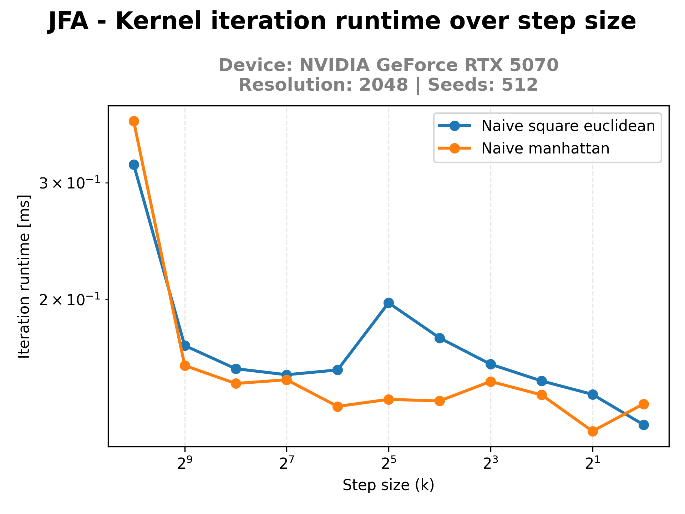 |
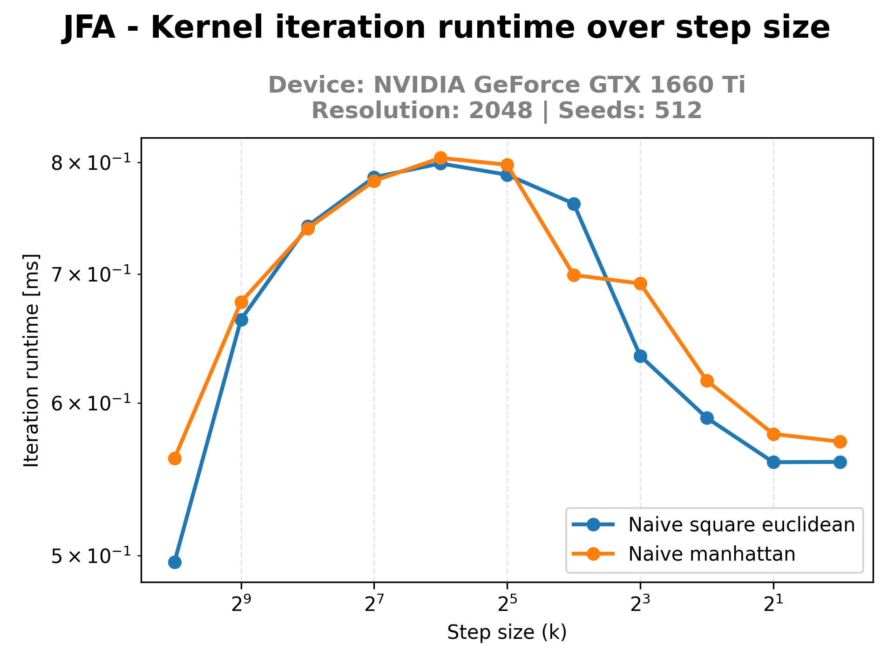 |
|
Device: NVIDIA GeForce RTX 5070 | Resolution: 2048 | Seeds: 512
|
NVIDIA GeForce GTX 1660 Ti | Resolution: 2048 | Seeds: 512
|
Für die RTX 5070 ist die Laufzeit zu Beginn ($k = 1024)
maximal und sinkt in der nächsten Iteration stark auf einen Wert, um den
sich die Laufzeiten der folgenden Iterationen bewegen. Das unterstützt
die Annahme, dass die Laufzeit für die großen Schrittweiten stark durch
die globalen Speicherzugriffe begrenzt ist und die Caches L1 und L2
keine Daten zwischenspeichern können (vgl. ncu-Analyse). Ab einer
gewissen Größe - in diesem Fall bei der Schrittweite k = 512 - reicht die Größe des Caches aus,
sodass die Daten überwiegend gepuffert werden können und folglich
weniger Zeit für die Speicherzugriffe benötigt wird. Dies wirkt sich auf
eine erhöhte Rechenauslastung und eine kürzere Kernellaufzeit aus.
Bei der GTX 1660 Ti verhält es sich anders: Die Laufzeit
ist zu Beginn (k = 1024) recht niedrig,
steigt dann für die mittleren Schrittweiten an und flacht für die
kleinen wieder ab (parabelförmiges Verhalten). Bei k = 1024 liegen viele Nachbarpixel außerhalb
des logischen Bildes und müssen somit gar nicht geprüft werden. Dadurch
muss keine Speicheranfrage an das globale VRAM gestellt werden, was zu
einer reduzierten Kernellaufzeit führt (Out-of-Bounds-Effekt).
Mit abnehmender Schrittweite liegen immer mehr Nachbarpixel im Raster,
wodurch mehr Daten geladen werden müssen und die Kernellaufzeit steigt.
Ab k = 32 greift dann auch bei der GTX
der oben beschriebene Cache-Effekt, der in einer reduzierten
Kernellaufzeit resultiert und die Kurve somit abflacht.
Zu beachten ist, dass die ncu-Analyse hier mit der
RTX 5070 durchgeführt wurde (vgl. Anhang) und es starke Hardwareunterschiede zu der
GTX 1660 Ti gibt. Das aus der ncu-Analyse resultierende
Verhalten muss nicht direkt für die GTX 1660 Ti gelten. Der
L1- und L2-Cache der RTX 5070 ist beispielsweise deutlich
größer als der der GTX 1660 Ti, weshalb der Effekt deutlich
früher eintritt (vgl. GPU-Vergleich).
Können Optimierungen durchgeführt werden? Wenn ja, warum? Wenn nein, warum nicht?
Shared Memory
Wie zuvor erläutert, ist der JFA primär memory bound (vgl. ncu-Analyse). Um diesem Aspekt nachzugehen, wird als erster Optimierungsansatz Shared Memory evaluiert. Der Einsatz von Shared Memory ist primär dann sinnvoll, wenn benachbarte Threads innerhalb eines Blocks redundant auf dieselben Speicheradressen im globalen VRAM der GPU zugreifen müssen. Durch das einmalige, kollektive Laden der Daten aus dem VRAM in das Shared Memory können nachfolgende, mehrfache Lesezugriffe beschleunigt werden.
Problemstellung bei JFA
Im Hinblick auf den Einsatz von Shared Memory beim JFA ergibt sich
folgende Herausforderung: Pro Iteration benötigt jeder Thread die Daten
von sich selbst sowie von 8 Nachbarpixeln. Die Problematik hierbei ist,
dass das Zugriffsfenster stark mit der aktuellen Schrittweite
(step_size) je nach Iterationsschritt variiert:
Große Schrittweiten: Die benötigten Nachbardaten liegen weit auseinander und außerhalb des Thread-Blocks. Um diese Distanzen abzudecken, müsste der Shared-Memory-Buffer unrealistisch groß dimensioniert werden. Dies würde nicht nur das Hardware-Limit des Shared Memory pro Block sprengen, sondern auch zu einem Overhead beim Laden der Daten führen. Der Einsatz von Shared Memory ist in diesen Phasen daher nicht sinnvoll.
Kleine Schrittweiten: Erst wenn die Schrittweite klein genug ist und unter einen bestimmten Schwellenwert fällt, liegen alle von einem Thread-Block benötigten Pixeldaten räumlich so nah beieinander, dass sie gemeinsam in den Shared Memory geladen werden können und der Einsatz von Shared Memory könnte von Nutzen sein.
Die hybride Strategie
Um diesem Verhalten gerecht zu werden, wurde eine hybride
Kernel-Strategie implementiert. Die Konstante
JFA_SHARED_THRESHOLD dient als Weiche:
Edge Cases und das Halo-Padding
Für die Implementierung wird das Grid in Blöcke aufgeteilt und pro Block soll ein Shared-Memory-Buffer angelegt werden. Ein Problem bei der Blockaufteilung sind die Rand-Threads (Edge Cases). Threads, die sich am äußeren Rand eines 16 \times 16-Blocks befinden, müssen zur Distanzberechnung Pixel abfragen, die außerhalb ihres eigenen Blocks liegen. Um dieses Problem zu adressieren, stehen unter anderem 2 Möglichkeiten zur Auswahl:
JFA_SHARED_THRESHOLD)Um einen Zugriff auf das globale VRAM zu verhindern, wird der Shared-Memory-Buffer um eine Sicherheitszone - dem Halo (Heiligenschein) - in alle vier Richtungen erweitert. Das folgende Bild soll die Aufteilung schematisch darstellen.
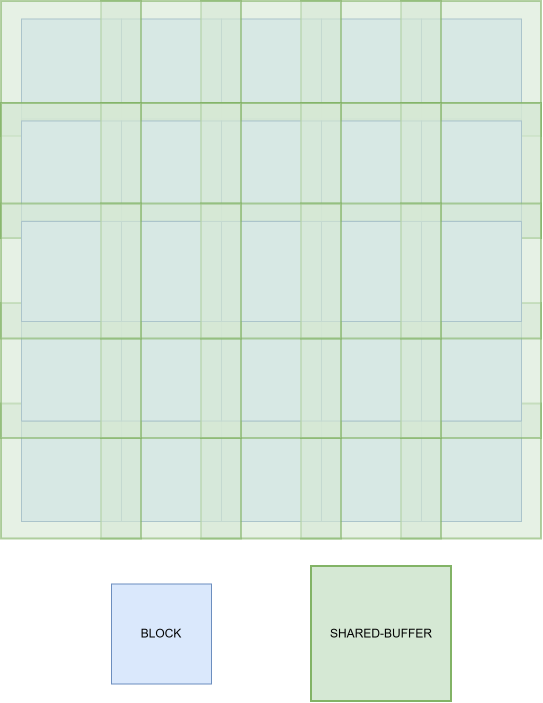
Die maximale Breite dieses Halos (MAX_HALO_RADIUS)
leitet sich direkt aus der maximal erlaubten Schrittweite innerhalb des
Shared Memorys ab (\mathrm{JFA\_SHARED\_THRESHOLD} / 2).
Kooperatives Laden mittels Grid-Stride-Loop
Da der Shared-Memory-Buffer inklusive Halo größer ist als die Anzahl der verfügbaren Threads im Block (z.B. 24 \times 24 = 576 Elemente vs. 16 \times 16 = 256 Threads), kann nicht jeder Thread einfach genau ein Pixel laden. Um die Daten dennoch komplett ins Shared-Memory-Buffer zu laden, wird eine Grid-Stride-Loop verwendet:
-1).Nach dem Ladevorgang stellt cuda.syncthreads() sicher,
dass erst alle Elemente im Shared Memory liegen, bevor die Threads mit
der eigentlichen JFA-Distanzberechnung starten. Threads, die außerhalb
der echten Bildgrenzen liegen, terminieren erst nach
diesem Sync, da sie beim kooperativen Laden des Halos mithelfen mussten.
Die JFA-Distanzberechnung wird dann auf den Pixeldaten im
Shared-Memory-Buffer durchgeführt.
Gibt es Bank Conflicts?
Shared Memory ist in 32 Banks aufgeteilt, wobei jede Bank 4 Byte (32 Bit) breit ist. Wenn mehrere Threads desselben Warps im selben Taktzyklus auf unterschiedliche Adressen innerhalb derselben Bank zugreifen wollen, entsteht ein Bank Conflict. Der Zugriff auf diese Bank wird dann serialisiert, bis alle anfragenden Threads bedient wurden, was zu einem Leistungsverlust führen kann (vgl. NVIDIA-Dokumentation).
In diesem Kernel liegt das shared_buffer-Array als
3D-Layout (SHARED_MEMORY_SIZE, SHARED_MEMORY_SIZE, 2) vor,
wobei die letzte Dimension die X- und Y-Koordinate eines Punkts
interleaved speichert. Dadurch beträgt der Adressabstand
zwischen zwei in x-Richtung benachbarten Threads nicht 1
Wort (4 Byte; 32 Bit), sondern 2 Worte (2 Banks). Dadurch, landen bei
einem Zugriff wie
shared_buffer[shared_pixel_y, shared_pixel_x, 0] jeweils
zwei Threads in derselben Bank: Thread 0 und Thread 16 greifen auf Bank
0 zu, Thread 1 und Thread 17 auf Bank 2, Thread 2 und Thread 18 auf Bank
4 usw. Es entsteht somit ein 2-way Bank Conflict, der
sowohl beim kooperativen Laden des Shared Memory als auch beim Lesen des
eigenen Punktes und bei der Nachbarschaftsauswertung auftritt.
Dimensionierung von SHARED_MEMORY_SIZE
Der Shared-Memory-Buffer wird statisch für den Worst-Case dimensioniert:
\mathrm{SHARED\_MEMORY\_SIZE} = \mathrm{BLOCK\_DIM} + 2 \times \mathrm{MAX\_HALO\_RADIUS}
Bei kleiner werdenden Schrittweiten (2 und 1) schrumpft der tatsächlich benötigte Halo-Bereich dynamisch zusammen. Da der Shared-Memory-Buffer jedoch statisch allokiert sein muss, bleibt ein Teil des äußeren Randes in den letzten Schritten ungenutzt. Zudem führt das Halo-Verfahren dazu, dass sich die Speicherbereiche benachbarter Blöcke “überschneiden” und manche Pixeldaten trozdem noch von mehreren Blöcken redundant geladen werden müssen.
Für die Dimensionierung gilt es, das Hardware-Limit von standardmäßig 48 KB Shared Memory pro Thread-Block nicht zu überschreiten (vgl. Forum-Beitrag):
BLOCK_DIM = 16 und
JFA_SHARED_THRESHOLD = 8 ergeben sich 24 \times 24 = 576 Pixel-Elemente. Da für
jeden Pixel zwei Koordinaten (x und y) als
int32 (4 Byte) gespeichert werden, belegt der Buffer im
Speicher:576 \times 2 \times 4\mathrm{ Byte} = 4608\mathrm{ Byte} \approx 4,6\mathrm{ KB}
JFA_SHARED_THRESHOLD = 16 steigt die Anzahl der
Elemente bereits auf (16 + 2 \times 8)^2 =
1024 Pixel an, was zu folgendem Speicherbedarf führt:1024 \times 2 \times 4\mathrm{ Byte} = 8192\mathrm{ Byte} = 8\mathrm{ KB}
JFA_SHARED_THRESHOLD = 32 steigt der Speicherbedarf
zu:(16 + 2 \times 16)^2 = 48 \times 48 = 2304\mathrm{ Pixel} 2304 \times 2 \times 4\mathrm{ Byte} = 18432\mathrm{ Byte} \approx 18,4\mathrm{ KB}
JFA_SHARED_THRESHOLD = 64 steigt die
Pixelanzahl auf (16 + 2 \times 32)^2 = 80
\times 80 = 6400 Pixel. Dies entspricht im Speicher: 6400 \times 2 \times 4\mathrm{ Byte} =
51200\mathrm{ Byte} = 50\mathrm{ KB} Damit wird das
Hardware-Limit von 48 KB (\approx 0xc000 Bytes) gesprengt. Dies wird
bereits beim Kompilieren verhindert und bricht mit folgender
Fehlermeldung ab:uses too much shared data (0xc800 bytes, 0xc000 max)Da ein zu großer Schwellenwert den Shared-Memory-Bedarf ansteigen
lässt und den Ladeaufwand für den Halo-Bereich vergrößert, wird der
Schwellenwert JFA_SHARED_THRESHOLD = 8 festgelegt. Daraus
ergeben sich die folgenden Performancemessungen:
uv run .\src\task7.py jfa_shared_square_euclidean
uv run .\src\task7.py compare-jfa_square_euclidean-jfa_shared_square_euclidean
uv run .\src\task6b.py shared-jfa-step-analysis| RTX 5070 | GTX 1660 Ti |
|---|---|
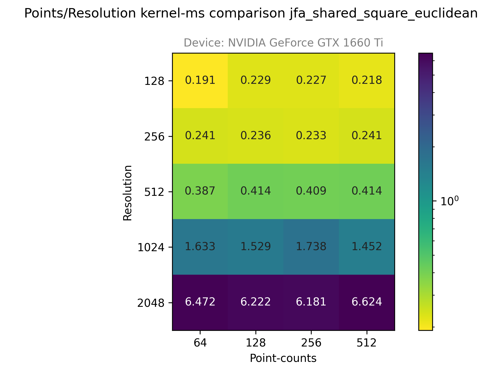 |
|
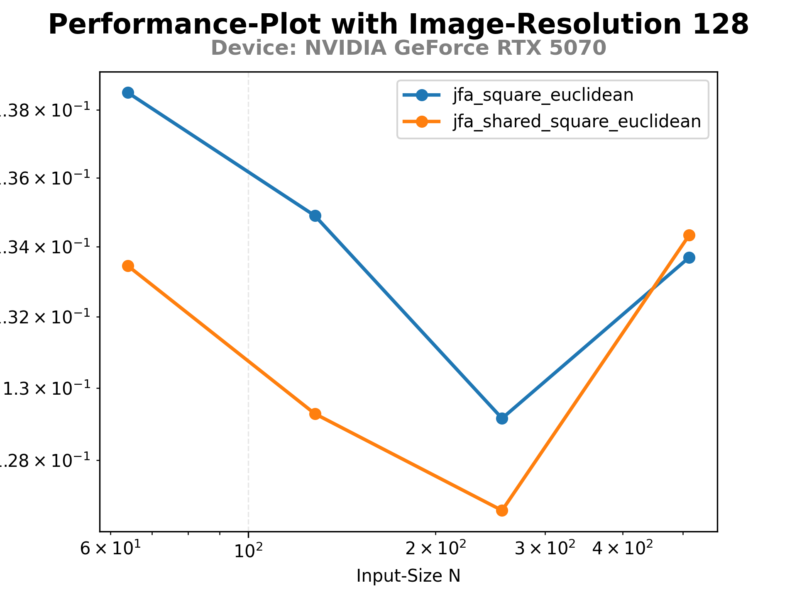 |
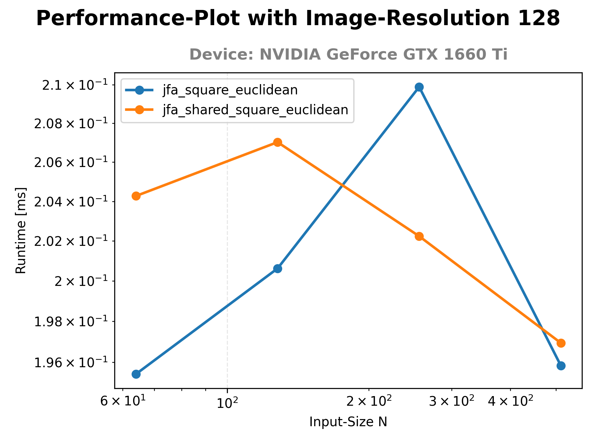 |
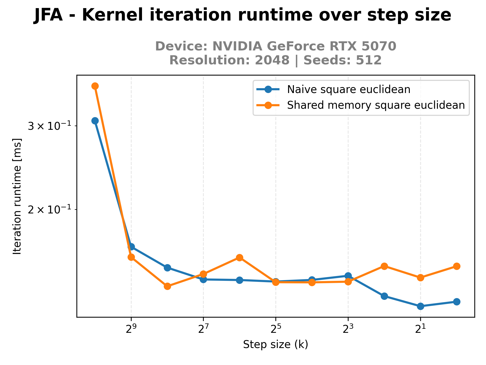 |
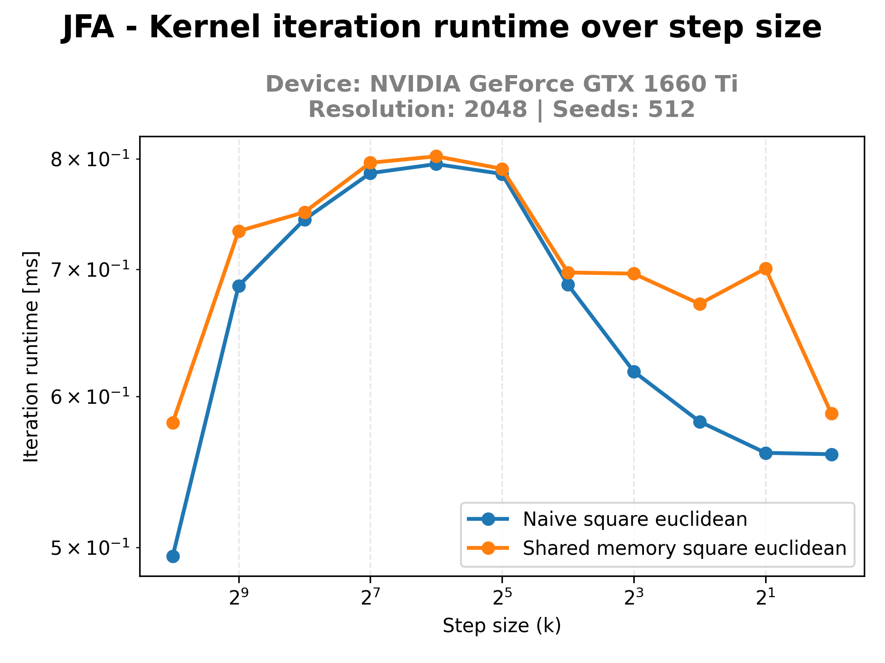 |
Auch hier zeigt sich wieder die typische JFA-Charakteristik bezüglich
der Laufzeitkomplexität in Abhängigkeit von Auflösung. In dem Diagramm,
das die Laufzeit in Abhängigkeit zur Schrittweite darstellt, ist bei der
GTX 1660 Ti zu erkennen, dass beide Implementierungen für
die großen Schrittweiten übereinander liegen. Dies ist darauf
zurückzuführen, dass die Shared Memory Pipeline hier nicht aktiviert
ist. Ab Schrittweite 4 greift der Shared-Memory-Ansatz, der eine höhere
Laufzeit als der naive Ansatz aufweist. Vergleicht man die
Gesamtlaufzeiten mit denen der naiven quadratischen euklidischen
Implementierung, stellt man fest, dass der Einsatz von Shared Memory
keinen Laufzeitvorteil erbracht hat. Dafür lassen sich
folgende mögliche Ursachen identifizieren:
Für das kooperative Laden mittels Grid-Stride-Loop sind innerhalb
des Kernels Ganzzahl-Divisionen (//) und Modulo-Operationen
(%) notwendig, um die linearen Thread-Indizes wieder in
2D-Koordinaten für das Shared-Memory-Array zu übersetzen. Diese
Operationen sind mathematisch aufwändig und können die Laufzeit
verschlechtern.
Der Befehl cuda.syncthreads() ist ein
Synchronisations-Barriere, bei der alle 256 Threads des Blocks
aufeinander warten müssen, bis das Laden des Buffers abgeschlossen ist.
Bei der naiven Implementierung entfällt diese Barriere, wodurch die
Threads unabhängiger voneinander agieren können.
Die hardwareseitigen L1- und L2-Caches leisten bereits bei der naiven Implementierung einen enormen Beitrag bei den kleinen Schrittweiten, wodurch der softwareseitig verwaltete Shared-Memory-Buffer keinen signifikanten Zusatznutzen mehr generieren kann.
Die von ncu erzeugte Datei unterstreicht das. In den Iterationen 1 bis 8 meldet ncu ein Memory-Bound-Problem, da hier noch der naive Ansatz über VRAM als Fallback verwendet wird (vgl. ncu Analse der naiven Implementation). Ab Iteration 9 (Schrittweite 4) greift die Shared-Memory-Pipeline, und ncu meldet nun eine höhere Compute- als Memory-Auslastung. Das zeigt zwar, dass der Shared-Memory-Ansatz hier den ursprünglichen Speicher-Engpass auf die Recheneinheiten verlagert, dieser Effekt jedoch durch den zusätzlichen Rechenaufwand (Indexberechnung via Ganzzahl-Division/Modulo, Synchronisationsbarriere) wieder kompensiert wird, wodurch unterm Strich keine Laufzeitverbesserung gegenüber der naiven Implementierung entsteht.
Um dem Problem der interleaved 3D-Struktur (Bank Conflicts) nachzugehen, wird im folgenden Abschnitt ein alternatives Datenlayout betrachtet. Da der Shared-Memory-Ansatz gegenüber der naiven Implementierung keine relevante Laufzeitverbesserung brachte, wird wieder die naive, ursprüngliche Implementierung verwendet, wobei das zugrunde liegende Problem gleich bleibt.
Datenlayout optimieren
Structure of Arrays (SoA) vs. Array of Structures (AoS)
Bei der naiven Implementierung
_jfa_pass_square_euclidean_kernel eines
JFA-Iterationsschritts wird für das Grid ein Array of Structures
(AoS) Layout verwendet. Das bedeutet, es wird ein 3D-Array der
Form (Height, Width, 2) genutzt, welches pro Pixel ein
Tupel von (x, y) Punkt-Koordinaten speichert. Dieses Layout wird häufig
verwendet, weil es für den Menschen einfacher vorzustellen und im Code
intuitiv zu handhaben ist. Im Speicher liegen die Daten dabei
abwechselnd in folgender Form:
X0 Y0 X1 Y1 X2 Y2 X3 Y3 ...Allerdings hat dieses Layout in CUDA häufig einen Nachteil bezüglich
des Speicherzugriffs: Threads innerhalb eines gemeinsamen Warps (32
Threads) können keine vollständig coalesced Speicherzugriff
durchführen. Wenn Thread 0 die X-Koordinate des ersten Pixels und Thread
1 die X-Koordinate des zweiten Pixels laden möchte, liegt im Speicher
das Y0 des ersten Threads im Weg. Die Zugriffe sind somit
mit einer Schrittweite von 2 gestreckt, was zu einer höheren Anzahl von
Speicher-Transaktionen führt.
Um globale Speicherzugriffe zu bündeln, wird in diesem Optimierungsschritt das gegensätzliche Layout Structure of Arrays (SoA) verwendet. Dabei werden die Daten nach Komponenten getrennt im Speicher abgelegt:
X0 X1 X2 X3 ... Y0 Y1 Y2 Y3 ...Wenn nun die 32 Threads eines Warps die X-Koordinaten von 32 nebeneinanderliegenden Pixeln abfragen, liegen diese Daten lückenlos hintereinander im Speicher. Die Hardware kann diese Anfrage in einer Speichertransaktion (Coalesced Access) abarbeiten. Das Gleiche gilt anschließend für die Y-Koordinaten (vgl. Forum-Beitrag).
Umsetzung für JFA
Im JFA wird das ursprüngliche Grid der Form
shape=(resolution, resolution, 2) so angepasst, dass es
eine Dimension weniger besitzt, dafür aber die doppelte logische Höhe
aufweist: shape=(resolution * 2, resolution). Die Daten für
die X- und Y-Koordinaten der Punkte werden planar untereinander
angeordnet:
Um im Kernel auf die Daten zuzugreifen, muss für die Y-Koordinate
lediglich der Offset der Bildauflösung (size) auf den
Zeilenindex hinzuaddiert werden, während der X-Wert auf der normalen
Zeile geladen werden kann:
grid_in[pixel_y, pixel_x]
grid_in[pixel_y + size, pixel_x]Für das Structure of Arrays (SoA) Layout ergeben sich folgende Performancemessungen:
uv run .\src\task7.py jfa_soa_square_euclidean
uv run .\src\task7.py compare-jfa_square_euclidean-jfa_soa_square_euclidean
uv run .\src\task6b.py SoA-jfa-step-analysis| RTX 5070 | GTX 1660 Ti |
|---|---|
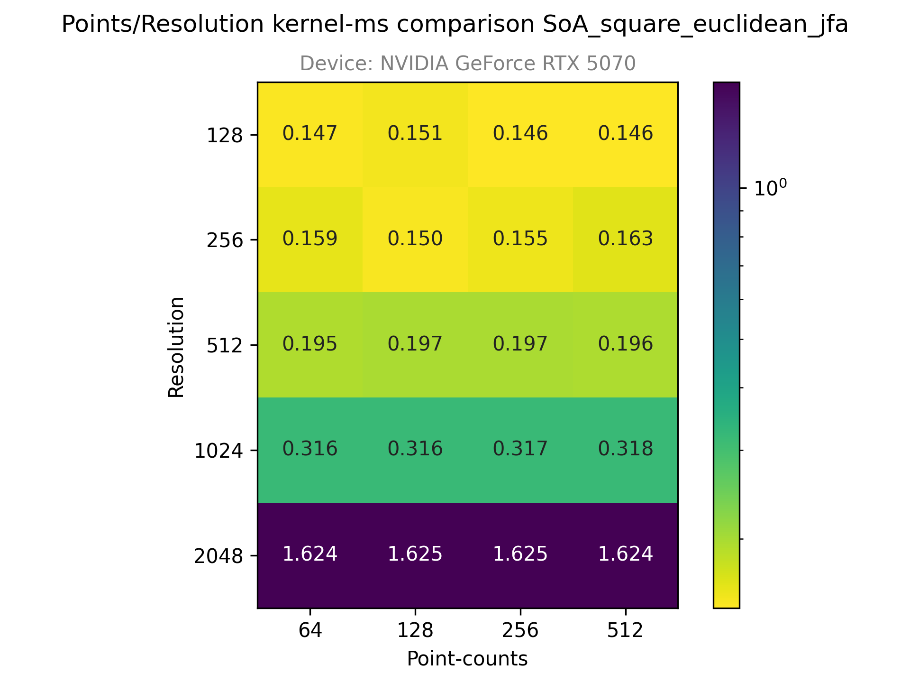 |
|
Ein Vergleich der Messdaten mit der naiven quadratischen euklidischen Implementierung zeigt, dass das umgestellte Structure of Arrays (SoA) Layout keinen messbaren Laufzeitvorteil gegenüber dem Array of Structures (AoS) Layout liefert. Es lassen sich folgende mögliche Ursachen feststellen:
X0 Y0 X1 Y1 ...) sequenziell hintereinander. Fordert der
Warp die X-Koordinate an, lädt die Hardware implizit die dazugehörige
Y-Koordinate innerhalb derselben Speicheranfrage in den Cache. Der
unmittelbar folgende Lesezugriff auf die Y-Komponente kann direkt aus
dem Cache erfolgen.
best_seed_x
und best_seed_y) ist beim AoS dadurch nur eine
Speicheranfrage nötig, wohingegen beim SoA durch die planare Trennung
für den Y-Wert eine zweite, separate Speicheranfrage an das VRAM
gestellt werden muss.size aufteilt, erfordert
jede Nachbarabfrage das Laden von zwei weit auseinanderliegenden
Speicheradressen. Müssen die Threads eines Warps aufgrund großer
Schrittweiten (step_size) ohnehin nicht
zusammenhängende Speicherbereiche anfordern, kann das SoA-Layout die
Anzahl der Speicheranforderungen im Vergleich zu AoS - bei dem X- und
Y-Wert in derselben Speicheranfrage liegen - erhöhen.step_size) in der horizontalen und insbesondere in der
vertikalen Dimension (Zeilensprünge) über die meisten Iterationen hinweg
nicht gegeben. Da die Threads dadurch ohnehin nicht zusammenhängende
Speichersegmente anfordern müssen, kann der Strukturvorteil von SoA
nicht greifen.Die ncu-Datei zeigt, dass in der Iteration 1 bis 3 der Speicher mehr ausgelastet ist als der Compute. Ab Iteration 4 bis zum Ende meldet ncu dann, dass beide Aspekte gut ausgeglichen sind (Compute and Memory are well-balanced).
Shuffle
Beim Shuffle können Daten von Threads innerhalb desselben Warps
direkt ausgetauscht werden, ohne den Umweg über Shared oder Global
Memory. Numba stellt dafür unter anderem shfl_sync,
shfl_up_sync, shfl_down_sync und
shfl_xor_sync bereit, die alle auf die laneid
eines Threads referenzieren - also seine Position (0-31) innerhalb des
Warps (vgl. Numba-Dokumentation).
Die Grundidee für den Einsatz in JFA
Zu Beginn jedes Passes lädt jeder Thread den aktuell gespeicherten Punkt seines eigenen Pixels aus dem Grid (als Ausgangsbasis für den Distanzvergleich). Braucht Thread A nun die Punkt-Daten von Pixel P+k, so hat Thread B, der zu P+k gehört, diesen Wert im selben Kernel-Aufruf ebenfalls bereits geladen. Sitzen A und B im selben Warp, könnte A die Daten von B per Shuffle direkt lesen, statt diese zusätzlich selbst aus dem Global Memory zu laden. Auf diese Weise ließe sich theoretisch eine der VRAM-Anfragen pro Nachbarschaftsprüfung einsparen.
Dieser Ansatz stößt bei JFA jedoch auf zwei grundlegende Einschränkungen:
dy == 0 and dx == +/-1).
blockDim.x kein Vielfaches von 32 ist -
wie in diesem Fall für BLOCK_DIM = 16 - verschiebt sich
dieses Bild leicht: Ein Warp fasst dann zwei volle Zeilen zusammen
(2 \cdot 16 = 32), sodass für einen
Teil der Threads sogar der direkt vertikale Nachbar im selben Warp läge.
In der Vertikalen gewinnt man zwar einen Schritt, in der Horizontalen
verliert man jedoch die Hälfte. Zudem ändert das nichts am
grundsätzlichen Problem, da weiterhin nur benachbarte Zeilenpaare
betroffen sind (nicht beliebige y-Distanzen).Implementierungsaufwand und Warp-Divergenz
Eine Umsetzung würde für jeden Thread diverse
if-Abfragen erfordern. Es muss geprüft werden ob der
Nachbar bei gegebener step_size tatsächlich innerhalb
desselben Warps liegt. Ist das nicht der Fall, muss es einen
Fallback-Pfad geben, der auf Global Memory basiert. Da innerhalb eines
Warps dann ein Teil der Threads den Shuffle-Pfad und ein anderer Teil
den Global-Memory-Pfad nimmt, divergiert der Warp an dieser Stelle
(Warp Divergenz). Dieser Effekt kann dann einen Großteil des
theoretischen Shuffle-Vorteils wieder aufheben und im ungünstigsten Fall
verschlechtert sich die Performance sogar gegenüber der naiven, rein
VRAM-basierten Variante.
Fazit
Sowohl die Analyse zu Shared Memory zuvor als auch die hier dargelegten Überlegungen zu Shuffle deuten für die Schrittweiten-Charakteristik von JFA auf keinen Performancegewinn hin: Shuffle wäre lediglich auf kleine Schrittweiten (k < 32) und auf 2 der 8 Nachbarn anwendbar, wodurch zusätzliche Index-Berechnungen, Index-Prüfungen und Warp-Divergenz resultieren würden. Aus diesem Grund wird eine JFA-Shuffle-Variante nicht implementiert. Der Ansatz wird an dieser Stelle dennoch dokumentiert, da er im Rahmen der Optimierungsüberlegungen diskutiert und geprüft wurde.
Ausblick: JFA+ und JFA*
Eine interessante Weiterentwicklung stellen die von Maciej A. Czyzewski (2019) vorgeschlagenen Varianten JFA+ und JFA* dar. Beide adressieren das Problem der “leeren” Grid-Bereiche im klassischen JFA, in denen keine Daten vorhanden sind und damit Zeit verloren geht. Als Lösung wird vorgeschlagen, leere Grid-Bereiche mit zufälligem Rauschen zu befüllen, sodass auch initial undefinierte Zellen früh Informationen zu Punkten erhalten. Ziel ist es, den Algorithmus dadurch in einer geringeren Anzahl von Schritten durchzuführen, wodurch die Gesamtlaufzeit reduziert werden soll:
Wichtig zu erwähnen ist, dass eine formale Analyse bzw. ein Beweis dieser Schrittzahl bislang aussteht. Trotzdem soll im Rahmen dieser Arbeit diese mögliche Idee aufgeführt und genannt werden, da die zuvor eigenentwickelten Optimierungsversuche keinen Laufzeitvorteil gegenüber dem klassischen JFA erzielen konnten.
Welche Limitation hat der bisher implementierte JFA Algorithmus?
Der bisherige JFA Algorithmus verwendet zwei Pixelraster welche
abwechselnd gelesen und geschrieben werden. Es sind zwei Raster nötig,
da sonst unvollständige Werte in das Raster geschrieben werden könnten,
wodurch es zu Race-Conditions kommt. Eine Folge davon könnte sein, dass
beim Lesen eines Punktes die x-Komponente und die
y-Komponente von verschiedenen Punkten verwendet
werden.
Welche Nachteile bringen zwei Raster?
Zwei Raster haben einige Nachteile. Zum einen ist mehr Speicher auf der GPU erforderlich und zum anderen muss der Algorithmus ständig die Zeiger auf die Raster nach jedem Kernel-Aufruf wechseln. Zudem kann es auch sein, dass die GPU die Caches schlechter ausnutzen kann, da es doppelt so viele Daten zu verarbeiten gibt.
Sind zwei Raster tatsächlich nötig?
Beim Algorithmus wird bei jedem Kernel-Aufruf pro Thread nur ein Pixel bearbeitet. Ob ein anderer Thread den Pixel aus dieser Iteration oder aus der nächsten Iteration liest, ist dabei tatsächlich nicht wichtig, da nur der nächste Nachbar relevant ist. Es muss also nur verhindert werden, dass ein ungültiger Punkt gelesen wird. Da der lesende Zugriff auf Pixel räumlich-weit reicht, vorallem in den ersten Iterationen, können die im Kurstext beschriebenen Synchronisations-Methoden nur schwer angewendet werden. Des Weiteren würden Synchronisations-Methoden vermutlich den Algorithmus langsamer machen. Um diese Problematik zu umgehen werden Punkte und das Raster separat gespeichert. Statt die Koordinaten der Punkte im Raster zu verwalten, werden Verweise auf die Punkte im Raster gespeichert. Diese Indirektion führt dazu, dass mehr Daten aus dem Global-Memory gelanden werden, aber dafür kann auf das zweite Raster verzichtet werden.
Ein weiterer Vorteil der sich hieraus ergibt, ist, dass für die
Punkt-Koordinaten wieder float32 statt int32
verwendet werden kann.
Um die Warp-Divergence niedrig zu halten werden zudem alle Verweise im Raster, welche initial keinen Punkt zugewiesen bekommen haben, auf den ersten Punkt der Eingabe gesetzt. Auf diese Weise kann zur Kernel-Laufzeit auf Prüfungen der Punkte verzichtet werden.
Wie ändert sich die Laufzeit beim verwenden nur eines Rasters?
Folgene Abbildungen geben die Laufzeiten des beschriebenen Ansatzes an.
| RTX 5070 | GTX 1660 Ti |
|---|---|
Es ist zu sehen, dass für die Eingabe-Größen 512 und
2048 des Raster eine Verbesserung der Laufzeit zu erkennen
ist. Die anderen Größen sind in einem ähnlichen Wertebereich wie zuvor.
Erstaunlicherweise ist der Algorithmus bei der RTX 5070
schneller, wenn die Eingabe-Größe des Raster 512 statt
128 ist. Der Grund hierfür konnte aus zeitlichen Gründen
leider nicht bestimmt werden.
[!NOTE] Maximale Pfadlänge unter Windows
Windows begrenzt Pfade auf 260 Zeichen. Da die Dateinamenerstellung der Performanceplots in Aufgabe 7 diese Grenze überschreiten können, wurde die Option eines Identifiers eingeführt - in diesem Fall
final. Ohne diesen schlägt das Speichern mitFileNotFoundError: [Errno 2] No such file or directory: ...fehl, weil der gesamte Pfad zu lang ist.
Abschließend werden die besten Algorithmen gemeinsam betrachtet und gegenübergestellt. Die folgenden Diagramme zeigen die Laufzeiten der jeweiligen Kernel für eine feste Bildgröße von 128 \times 128 und eine variierende Anzahl an Punkten:
| RTX 5070 | GTX 1660 Ti |
|---|---|
Der Pixel-Algorithmus ist vor allem bei einer geringen Punktemenge sehr schnell und weist eine deutlich bessere Laufzeit als der JFA auf. Mit zunehmender Anzahl von Punkten im Diagramm nimmt die Laufzeit jedoch quadratisch zu. Ab einer bestimmten Anzahl greift die JFA-Charakteristik und der JFA ist schneller. Dieser Übergang erfolgt je nach Implementierung des Pixel-Algorithmus zu einem späteren Zeitpunkt, aber irgendwann wird der Schnittpunkt zwingend erreicht.
Das gleiche Diagramm wurde für die Bildgröße 2048 \times 2048 erstellt um diesen Schnittpunkt zu zeigen.
| RTX 5070 | GTX 1660 Ti |
|---|---|
Welche der Optimierungen hat den größten Laufzeit-gewinn erbracht?
Wie viel schneller ist die Finale Implementation im Vergleich zur Naiven Implementation?
Ausblick
[!NOTE] Einschränkung bei Keyword (Named)-Arguments in CUDA-Kernels
Je nach installierter Numba-Version kann es zu Problemen kommen, wenn innerhalb eines CUDA-Kernels Keyword-Arguments (benannte Argumente) für Device-Funktionen verwendet werden.
- Problem: Die Kompilierung schlägt fehl und scheint direkt bei der Kernel-Signatur “stehenzubleiben”. Der Traceback zeigt jedoch, dass die Ursache weiter unten im Kernel liegt. Ein Aufruf der Art
get_thread_position(image=out_image)kann nicht verarbeitet werden- Lösung: Den Aufruf auf positionale Argumente umstellen:
get_thread_position(out_image)Verwendete Versionen anzeigen:
pip freeze
[!NOTE] Fokussierung der hardwarenahen Optimierung auf die NVIDIA GeForce RTX 5070
Für die Performance-Optimierung werden hardwarespezifische Daten mithilfe der NVIDIA Profiling Tools
nsys,ncusowie der Numba Funktion.inspect_asm()erzeugt. Um eine saubere Vergleichbarkeit der Messergebnisse zu gewährleisten und den Umfang der erzeugten Dateien nicht zu sprengen, beschränken sich die hardwarenahen Analysen auf die NVIDIA GeForce RTX 5070. Die Performance-Diagramme werden weiterhin für beide GPUs erstellt.
{kind=link}